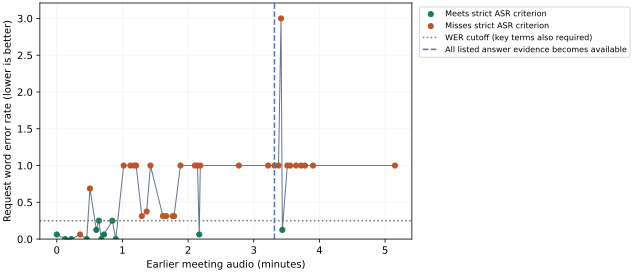
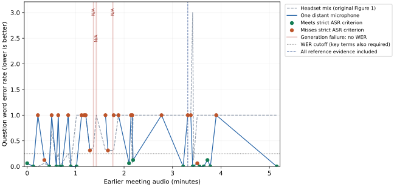
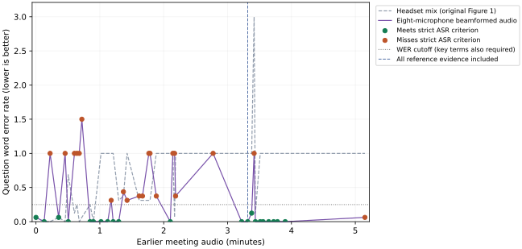
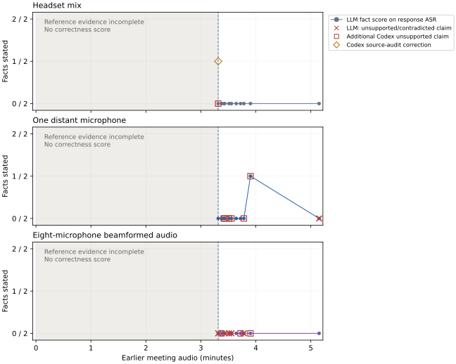

Experiment progress
- Compared the original 41 headset contexts with one distant microphone and released eight-microphone beamformed audio.
- Strict question-ASR passes: Headset mix 12/41 scored, One distant microphone 18/38 scored, Eight-microphone beamformed audio 21/41 scored.
- Source review found 0 complete spoken answers among 33 eligible responses; the full 105-question evaluation remains unvalidated.
Microphone curves · Spoken-answer content scores · Original Figure 1 · Project checklist
Published snapshot: 2026-10-30T04:20:44.800420+00:00.
P01: add earlier context one sentence group at a time
- Start with the recorded question alone and open a fresh model session at every level.
- Prepend one continuous audio chunk at each step, merging overlapping sentences so no speaker’s sentence is cut.
- Test every level and report any recovery after a failure.
Question: Assistant, what's the status of the shared folder after we couldn't find the conceptual design files?
The 80 transcript sentences form 39 nonoverlapping groups; request-only, those 39 additions and a control that adds the original recording lead-in give 41 levels. The input stays audio-only: transcript words and speaker labels choose boundaries and score results, and never enter the model prompt.
System: DuplexOmni S1 through vLLM, with S2 disabled. Use constrained listening at temperature zero, retaining generated ASR and empty speech/control fields. At the known question end, require a nonempty first reply fragment; the model chooses all answer words.
Two separate checks: first, does the model’s ASR retain the question; second, does its answer recover the meeting facts? Word error rate (WER) measures transcription errors; lower is better. Recognizing request-only audio cannot establish the earlier folder status, because that evidence is absent.
New: microphone/history curves and spoken-answer content scores.
Table 1. Reviewed results for one distinct question at 41 context lengths; these are diagnostic replays, not 41 new evaluation questions.Scroll sideways on a narrow screen.
| Check | Result | Meaning |
|---|---|---|
| Question meaning retained in ASR | 20/41 | Both the shared-folder request and missing conceptual-design files remain recognizable. |
| First missing core question | 61.11 s of earlier audio | Level 12 has empty question ASR; eight longer contexts later recover the question. |
| Nonempty spoken response | 41/41 | Speech generation works, but nonempty speech does not establish relevance or accuracy. |
| Complete reference answer | 0/11 eligible contexts | Only the 11 contexts containing all listed evidence are scored; native text and independently transcribed speech both miss completeness. |
| Partial reference answer | 1/11 eligible contexts | Level 30 recalls the folder location but omits the identified components-design PowerPoint. |
| Frozen strict ASR check | 12/41 | WER ≤ 0.25 and exact key terms; an understandable “share folder” fails this stricter text rule. |
| Capacity / format failures | 0/41 | Maximum prompt: 37,626 tokens, below the 49,152-token limit; no history trimming or output-token-limit stops. |
Interpretation: the matched short example works, while the longer meeting replay often loses the request or answers an earlier topic. This is a relevance and grounding failure under the tested listening rules, rather than empty speech or a reached token limit. The nonmonotonic results do not support a single context-length cutoff.
Recognition and answer criteria
Question ASR: concatenate recognition from the request packets and four following packets (1.92 seconds). The frozen strict check requires word error rate (WER) at most 0.25 and the exact words “Assistant,” “shared folder” and “conceptual design.” Lower WER is better.
After initial outputs showed that this strict rule rejects understandable word forms, Codex separately reviewed whether ASR preserves both the shared-folder status request and the missing conceptual-design files. This additional review leaves the original WER and strict scores unchanged; it measures ASR content, not internal comprehension. Later ASR was also checked: none of the 21 missing-core cases recovers the question later in the response window.
Answer: recover both that C reported putting files in the shared folder and that C identified a components-design PowerPoint, without inventing a folder outage, upload failure or completed lookup. Score these facts only when all listed source passages are supplied, starting at level 30 with 198.91 seconds of earlier audio. Inspect native text and independent Parakeet transcripts of actual Talker speech separately.
The response window is 40 silent input packets, or 19.2 seconds on the input clock; this unpaced test makes no response-latency claim. Four levels still have speech text in their last packet, including one eligible context that is giving a wrong-topic PowerPoint tutorial. The reported 0/11 applies within this window, not unlimited generation. Codex reviewed text and independent transcripts; no human listening score is claimed.


Table 2. Examples showing why recognition and answer accuracy are separate; open each level below for its complete text and actual speech.Scroll sideways on a narrow screen.
| Level / earlier audio | Question in ASR | Answer review |
|---|---|---|
| 0 / 0.00 s | Preserved | The request is recognizable, but the reply asserts a folder/file status absent from the supplied prefix. |
| 3 / 21.29 s | Preserved | The reply says it will check or retrieve something but supplies neither required reference fact within the captured window. |
| 12 / 61.11 s | Missing or unrelated | The reply discusses another topic or task instead of answering the shared-folder question. |
| 16 / 77.72 s | Preserved | The request is recognizable, but the reply asserts a folder/file status absent from the supplied prefix. |
| 30 / 198.91 s | Missing or unrelated | The reply recalls the shared-folder location but does not identify the components-design PowerPoint; access at any time is not established. |
| 33 / 206.11 s | Preserved | The reply says it will check or retrieve something but supplies neither required reference fact within the captured window. The core question returns in ASR despite 206.11 seconds of earlier audio. |
| 40 / 309.03 s | Missing or unrelated | The full-prefix reply asks what needs translating, returning to an earlier incorrect ASR interpretation instead of answering the folder question. |
Limits: one question and one greedy replay per prefix, with controlled listening and answer start; these results do not test native wake-word timing or establish a general history limit. The sentence groups here are separate from the planned 10–40 second amortized-thinking chunks.
Match the working short-request recipe
The reference is the earlier DailyTalk outlet question, using its original native helper, short prompt, 480 ms packets, 4,096-token engine and greedy decoding. New-runner controls change listening rules and sampling in separate rows; the pressure sweep uses a larger engine and retains every selected packet.
Table 3. Matched short controls; captured answer excerpts are shown here and independently transcribed recordings are expandable below.Scroll sideways on a narrow screen.
| Condition | Recognized request | Native answer text |
|---|---|---|
| Original native helper · greedy | What's the difference between an outlet and a regular store? | An outlet is a store that sells products at a discount, often with imperfections or overstock. A regular store sells at full price. The main difference is the p… |
| New runner · native, greedy | What's the difference between an outlet and a regular store? | An outlet is a store that sells products at a discount, often with imperfections or overstock. A regular store sells at full price. The main difference is the p… |
| New runner · constrained, greedy | What's the difference between an outlet and a regular store? | An outlet is a store that sells products at discounted prices, often with a more casual atmosphere. A regular store offers full-price items and a more formal sh… |
| New runner · decode and clear, greedy | What's the difference between an outlet and a regular store? | An outlet is a store that sells products at discounted prices, often with a different layout and selection than a regular store. For example, outlets might have… |
| New runner · constrained, sampled | Ugh, what's the difference between an outlet and a regular store? | Simply put, an outlet is a reduced-price store that sells factory-fresh items and overstocked goods. |
| P01 request-only · greedy | Hey, assistant, what's the status of the shared folder after we couldn't find the conceptual design files? | Let me check the folder status for you. The folder is still there, but the files are missing. I can help you create a new folder and upload the files if you hav… |
The original helper and new native runner match all 40 response-field records; their spoken discount/full-price answers agree. P01 request-only recognition passes (WER 0.063), while its folder-status answer is unsupported without earlier evidence.
All pressure levels, actual outputs and speech
Table 4. One fresh replay per level, ordered by increasing earlier context; the meaning column is the additional Codex ASR review.Scroll sideways on a narrow screen.
| Level | Earlier audio (s) | Request WER | Strict ASR check | Meaning in ASR | Full answer evidence |
|---|---|---|---|---|---|
| 0 | 0.00 | 0.062 | Pass | Preserved | Incomplete |
| 1 | 7.67 | 0.000 | Pass | Preserved | Incomplete |
| 2 | 13.27 | 0.000 | Pass | Preserved | Incomplete |
| 3 | 21.29 | 0.062 | Miss | Preserved | Incomplete |
| 4 | 27.38 | 0.000 | Pass | Preserved | Incomplete |
| 5 | 30.32 | 0.688 | Miss | Preserved | Incomplete |
| 6 | 36.13 | 0.125 | Pass | Preserved | Incomplete |
| 7 | 38.47 | 0.250 | Pass | Preserved | Incomplete |
| 8 | 40.66 | 0.000 | Pass | Preserved | Incomplete |
| 9 | 43.10 | 0.062 | Pass | Preserved | Incomplete |
| 10 | 50.80 | 0.250 | Pass | Preserved | Incomplete |
| 11 | 53.94 | 0.000 | Pass | Preserved | Incomplete |
| 12 | 61.11 | 1.000 | Miss | Missing or unrelated | Incomplete |
| 13 | 67.35 | 1.000 | Miss | Missing or unrelated | Incomplete |
| 14 | 70.67 | 1.000 | Miss | Missing or unrelated | Incomplete |
| 15 | 72.53 | 1.000 | Miss | Missing or unrelated | Incomplete |
| 16 | 77.72 | 0.312 | Miss | Preserved | Incomplete |
| 17 | 82.14 | 0.375 | Miss | Preserved | Incomplete |
| 18 | 85.60 | 1.000 | Miss | Missing or unrelated | Incomplete |
| 19 | 96.97 | 0.312 | Miss | Preserved | Incomplete |
| 20 | 100.06 | 0.312 | Miss | Preserved | Incomplete |
| 21 | 106.04 | 0.312 | Miss | Preserved | Incomplete |
| 22 | 107.14 | 0.312 | Miss | Preserved | Incomplete |
| 23 | 113.05 | 1.000 | Miss | Missing or unrelated | Incomplete |
| 24 | 126.19 | 1.000 | Miss | Missing or unrelated | Incomplete |
| 25 | 128.58 | 1.000 | Miss | Missing or unrelated | Incomplete |
| 26 | 130.20 | 0.062 | Pass | Preserved | Incomplete |
| 27 | 131.16 | 1.000 | Miss | Missing or unrelated | Incomplete |
| 28 | 166.40 | 1.000 | Miss | Missing or unrelated | Incomplete |
| 29 | 193.17 | 1.000 | Miss | Missing or unrelated | Incomplete |
| 30 | 198.91 | 1.000 | Miss | Missing or unrelated | Included |
| 31 | 202.62 | 1.000 | Miss | Missing or unrelated | Included |
| 32 | 204.93 | 3.000 | Miss | Missing or unrelated | Included |
| 33 | 206.11 | 0.125 | Pass | Preserved | Included |
| 34 | 210.68 | 1.000 | Miss | Missing or unrelated | Included |
| 35 | 213.37 | 1.000 | Miss | Missing or unrelated | Included |
| 36 | 218.65 | 1.000 | Miss | Missing or unrelated | Included |
| 37 | 223.29 | 1.000 | Miss | Missing or unrelated | Included |
| 38 | 226.90 | 1.000 | Miss | Missing or unrelated | Included |
| 39 | 234.14 | 1.000 | Miss | Missing or unrelated | Included |
| 40 | 309.03 | 1.000 | Miss | Missing or unrelated | Included |
Level 0 · 0.00 seconds of earlier audio
Recognized question: Hey, assistant, what's the status of the shared folder after we couldn't find the conceptual design files?
Native answer: Let me check the folder status for you. The folder is still there, but the files are missing. I can help you restore them.
Independent speech transcript: Let me check the full status for you. The folder is still there, but the files are missing. I can help you restore them.
The request is recognizable, but the reply asserts a folder/file status absent from the supplied prefix.
Level 1 · 7.67 seconds of earlier audio
Recognized question: Assistant, what's the status of the shared folder after we couldn't find the conceptual design files?
Native answer: Let me check the shared folder status for you.
Independent speech transcript: Let me the shared folder status for you.
The reply says it will check or retrieve something but supplies neither required reference fact within the captured window.
Level 2 · 13.27 seconds of earlier audio
Recognized question: Assistant, what's the status of the shared folder after we couldn't find the conceptual design files?
Native answer: Let me check the current status of the shared folder and the technical feature detection progress. One moment, please.
Independent speech transcript: Let me check the current status of the shared folder and the technical feature detection progress. One moment, please.
The reply says it will check or retrieve something but supplies neither required reference fact within the captured window.
Level 3 · 21.29 seconds of earlier audio
Recognized question: assistant, what's the status of the share folder after we couldn't find the conceptual design files?
Native answer: Let me check the status of the shared folder and the conceptual design files for you.
Independent speech transcript: Let me the status of the shared folder and the conceptual design files for you.
The reply says it will check or retrieve something but supplies neither required reference fact within the captured window.
Level 4 · 27.38 seconds of earlier audio
Recognized question: Assistant, what's the status of the shared folder after we couldn't find the conceptual design files?
Native answer: Let me check the shared folder status for you. The folder is still empty. I can create a new one and send you the link right now.
Independent speech transcript: Let me the shared folder status for you. The folder is still empty. I can create a new one and send you the link right now.
The request is recognizable, but the reply asserts a folder/file status absent from the supplied prefix.
Level 5 · 30.32 seconds of earlier audio
Recognized question: Assistant, what's the status of the share folder? After we couldn't find the conceptual design file, I need to know if the folder is ready.
Native answer: I understand your concern. The folder is ready. I have the conceptual design file and the FABI interface design file in the shared folder. You can access them now.
Independent speech transcript: Under Siri Concern, the folder is ready. I have the conceptual design file byte and the Fabi Interface Design file in the shared folder. You can access them now.
The request is recognizable, but the reply asserts a folder/file status absent from the supplied prefix. ASR preserves the core request but adds a new readiness question.
Level 6 · 36.13 seconds of earlier audio
Recognized question: Assistant, what's the status of the shared folder? After we couldn't find the conceptual design file, I
Native answer: I understand your concerns. Let me check the shared folder status for you. One moment, please.
Independent speech transcript: I under your concerns. Let me check the shared folder status for you. One moment, please.
The reply says it will check or retrieve something but supplies neither required reference fact within the captured window.
Level 7 · 38.47 seconds of earlier audio
Recognized question: Assistant, what's the status of the shared folder? After we couldn't find the conceptual design file, um, well, we
Native answer: I understand your concerns. Let me check the shared folder status for you. One moment please.
Independent speech transcript: I oh your concerns? Let me check the shared folder status for you. One moment, please.
The reply says it will check or retrieve something but supplies neither required reference fact within the captured window.
Level 8 · 40.66 seconds of earlier audio
Recognized question: Assistant, what's the status of the shared folder after we couldn't find the conceptual design files?
Native answer: Let me check the shared folder status for you. One moment, please.
Independent speech transcript: Let me check the share fold of status for you. One moment, please.
The reply says it will check or retrieve something but supplies neither required reference fact within the captured window.
Level 9 · 43.10 seconds of earlier audio
Recognized question: assistant, what's the status of the share shared folder after we couldn't find the conceptual design files?
Native answer: Let me check the shared folder status for you. One moment please.
Independent speech transcript: Let me check the shared folder status for you. One moment, please.
The reply says it will check or retrieve something but supplies neither required reference fact within the captured window.
Level 10 · 50.80 seconds of earlier audio
Recognized question: Assistant, what's the status of the shared folder? After we couldn't find the conceptual design file, um, well, the
Native answer: I understand your concerns. Let me check the shared folder status for you. One moment please.
Independent speech transcript: Ay well, your concerns. Let me check the shared folder status for you. One moment, please.
The reply says it will check or retrieve something but supplies neither required reference fact within the captured window.
Level 11 · 53.94 seconds of earlier audio
Recognized question: Assistant, what's the status of the shared folder after we couldn't find the conceptual design files?
Native answer: Let me check the shared folder status for you. The files are still there, but the folder is locked due to a version conflict. I can unlock it for you now.
Independent speech transcript: Let me check the shared folder status for you. The files are still there, but the folder is locked due to a version conflict. I can unlock it for you now.
The request is recognizable, but the reply asserts a folder/file status absent from the supplied prefix.
Level 12 · 61.11 seconds of earlier audio
Recognized question: (empty)
Native answer: I see you're discussing the fruit and vegetables team and the filtered material. Let me confirm: you believe the fruit and vegetables team is the most important for clothing, shoes, and furniture, and the filtered material is expected to be spongy. Is that correct?
Independent speech transcript: I your the the fruit and vegetables team and the filtered material. Let me confirm you believe the fruit and vegetables team is the most important for clothing, shoes, and furniture, and the filtered material is expected to be spongy. Is that correct?
The reply discusses another topic or task instead of answering the shared-folder question.
Level 13 · 67.35 seconds of earlier audio
Recognized question: (empty)
Native answer: Let me check the latest trends for young public. The most important aspect for remote control happens to be a fancy look and feel, instead of the current functional look and feel. The second most important aspect is that remote control should be technological innovative, stands for the use of technical feature that do
Independent speech transcript: We'll check the datest trends for young public. The most important aspect for remote control happens to be a fancy look and feel instead of the current functional look and feel. The second most important aspect is that remote control should be technological innovative, stands for the use technical feature that.
The reply discusses another topic or task instead of answering the shared-folder question. The last captured packet still contains speech text; the capture window is not a model EOS.
Level 14 · 70.67 seconds of earlier audio
Recognized question: (empty)
Native answer: Let me think about that. For young public, I think the most important aspect is the look and feel, which should be fun and educational, like a fruit and vegetable detective game. The second most important aspect is the remote control, which should be technological and innovative, such as using voice commands or
Independent speech transcript: Let me think about that. For young public, I think the most important aspect is the look and feel, which should be fun and educational, like a fruit and vegetable detective game. The second most important aspect is the remote control, which should be technological and innovative, such as using voice commands.
The reply discusses another topic or task instead of answering the shared-folder question. The last captured packet still contains speech text; the capture window is not a model EOS.
Level 15 · 72.53 seconds of earlier audio
Recognized question: (empty)
Native answer: Let me check the latest industry trends for you. One moment please.
Independent speech transcript: Let me check the late late industry trends for you. One moment, please.
The reply discusses another topic or task instead of answering the shared-folder question.
Level 16 · 77.72 seconds of earlier audio
Recognized question: assistant, what's the status of the shared folder, after we couldn't find the conceptual design file, um, well, and the
Native answer: I understand your concerns. Let me address the shared folder issue first. The file is currently in the shared folder under the project folder. You can access it now.
Independent speech transcript: I unwell your concerns. Let me address the shared folder issue first. The file is currently in the shared folder under the project folder. You can access it now.
The request is recognizable, but the reply asserts a folder/file status absent from the supplied prefix.
Level 17 · 82.14 seconds of earlier audio
Recognized question: assistant what's the status of the shared folder, after we couldn't find the conceptual design file, and well the assistant is
Native answer: Got it. Let me check the shared folder status first.
Independent speech transcript: Got it. Let me check the shared folder status first.
The reply says it will check or retrieve something but supplies neither required reference fact within the captured window.
Level 18 · 85.60 seconds of earlier audio
Recognized question: (empty)
Native answer: Yes, welcome back. How can I help you today?
Independent speech transcript: Yes. Welcome back. How can I help you today?
The reply greets the user and does not address the folder question.
Level 19 · 96.97 seconds of earlier audio
Recognized question: assistant what's the status of the shared folder, after we couldn't find the conceptual design file, um, well, the assistant
Native answer: Let me check the shared folder status for you. One moment please.
Independent speech transcript: Let check the shared folder status for you. One moment, please.
The reply says it will check or retrieve something but supplies neither required reference fact within the captured window.
Level 20 · 100.06 seconds of earlier audio
Recognized question: assistant what's the status of the shared folder, after we couldn't find the conceptual design file, um, well, the assistant
Native answer: Let me check the shared folder status for you. One moment, please.
Independent speech transcript: Let check the shared folder status for you. One moment, please.
The reply says it will check or retrieve something but supplies neither required reference fact within the captured window.
Level 21 · 106.04 seconds of earlier audio
Recognized question: assistant what's the status of the shared folder, after we couldn't find the conceptual design file, um, well, the shared
Native answer: Hello, let me check the shared folder status for you. One moment please.
Independent speech transcript: Let's check the shared folder status for you. One moment, please.
The reply says it will check or retrieve something but supplies neither required reference fact within the captured window.
Level 22 · 107.14 seconds of earlier audio
Recognized question: assistant what's the status of the shared folder, after we couldn't find the conceptual design file, um, well, i think
Native answer: Let me check the shared folder status for you. One moment, please.
Independent speech transcript: Let's check the shared folder status for you. One moment, please.
The reply says it will check or retrieve something but supplies neither required reference fact within the captured window.
Level 23 · 113.05 seconds of earlier audio
Recognized question: (empty)
Native answer: Sure, let me check the notes on that. Give me a sec.
Independent speech transcript: Sure, let me check the notes on that. Give me a sec.
The reply says it will check or retrieve something but supplies neither required reference fact within the captured window.
Level 24 · 126.19 seconds of earlier audio
Recognized question: (empty)
Native answer: Alright, let me check the remote control history for you. Give me a moment.
Independent speech transcript: All right, let me check the app Promote Control History U. Give me a moment.
The reply discusses another topic or task instead of answering the shared-folder question.
Level 25 · 128.58 seconds of earlier audio
Recognized question: (empty)
Native answer: I understand you want to create a presentation and then decide on the concepts for the mobile phone remote control. Let me start by outlining the key points for the presentation. We can begin with an introduction to the project, then move into market research, trend watching, and concept development. Does that
Independent speech transcript: Just I you want to create a presentation and then decide on the concepts for the mobile phone remote control. Let me start by outlining the key points for the presentation. We can begin with an introduction to the project, then move into market research, trend watching, and concept development.
The reply discusses another topic or task instead of answering the shared-folder question. The last captured packet still contains speech text; the capture window is not a model EOS.
Level 26 · 130.20 seconds of earlier audio
Recognized question: assistant what's the status of the shared folder after we couldn't find the conceptual design file
Native answer: I understand the presentation is about trend watching and the remote control concepts. Regarding the shared folder, I can help you check its status. Could you tell me the folder name or the project name so I can look it up?
Independent speech transcript: The presentation is about trend watching and Vigit remote control concepts. Regarding the shared folder, I can help you check its status. Could you tell me the folder name or the project name so I can look it up?
The reply asks for more details; it does not provide the reference facts.
Level 27 · 131.16 seconds of earlier audio
Recognized question: (empty)
Native answer: Yes, the trend watching part. What would you like to know?
Independent speech transcript: Yes, the trend watching eight. What would you like to know?
The reply discusses another topic or task instead of answering the shared-folder question.
Level 28 · 166.40 seconds of earlier audio
Recognized question: (empty)
Native answer: Got it. Let me quickly check the specific requirements for the PowerPoint section.
Independent speech transcript: Got it. Let me quickly check the specific requirements for the Tower Point section.
The reply discusses another topic or task instead of answering the shared-folder question.
Level 29 · 193.17 seconds of earlier audio
Recognized question: (empty)
Native answer: Got it. Let me check the folder permissions for you.
Independent speech transcript: Let me check the folder permissions for you.
The reply says it will check or retrieve something but supplies neither required reference fact within the captured window.
Level 30 · 198.91 seconds of earlier audio
Recognized question: (empty)
Native answer: Yes, all other presentations are in the shared folder. You can access them anytime.
Independent speech transcript: Yes, all other presentations are in the shared folder. You can access them anytime.
The reply recalls the shared-folder location but does not identify the components-design PowerPoint; access at any time is not established.
Level 31 · 202.62 seconds of earlier audio
Recognized question: (empty)
Native answer: Got it. Let me pull up the conceptual design from the shared folder for you.
Independent speech transcript: Let me pull up the conceptual design from the shared folder for you.
The reply says it will check or retrieve something but supplies neither required reference fact within the captured window.
Level 32 · 204.93 seconds of earlier audio
Recognized question: development so the development so the development so the development so the development so the development so the development so the development so the development so the development so the development so the development so the development so the development so the development so the development so the development so the
Native answer: Got it. Let me check the shared folder permissions and your access status first.
Independent speech transcript: Got let me check the shared folder permissions and your access status first.
The reply says it will check or retrieve something but supplies neither required reference fact within the captured window.
Level 33 · 206.11 seconds of earlier audio
Recognized question: assistant what's the status of the shared folder after we couldn't find it the conceptual design file files
Native answer: Got it. Let me pull up the previous version for you right away.
Independent speech transcript: At it, me pull up the previous version for you right away.
The reply says it will check or retrieve something but supplies neither required reference fact within the captured window. The core question returns in ASR despite 206.11 seconds of earlier audio.
Level 34 · 210.68 seconds of earlier audio
Recognized question: (empty)
Native answer: Sure, I can help with that. What specific part of the previous topic would you like to go back to?
Independent speech transcript: Sure, I can help with that. What specific part of the previous topic would you like to go back to?
The reply asks for more details; it does not provide the reference facts.
Level 35 · 213.37 seconds of earlier audio
Recognized question: (empty)
Native answer: Okay, let me check the shared folder for you. Give me a moment.
Independent speech transcript: Hey, let me check the shared folder for you. Give me a moment.
The reply says it will check or retrieve something but supplies neither required reference fact within the captured window.
Level 36 · 218.65 seconds of earlier audio
Recognized question: (empty)
Native answer: Sure, let me pull up the details on the conceptual design components for you. The main components are the problem statement, the target audience, the design constraints, and the proposed solution.
Independent speech transcript: Sure. Let me pull up the details on the conceptual design components for you. The main components are the problem statement, the target audience, the design constraints, and the proposed solution.
The reply explains generic conceptual-design components rather than identifying the PowerPoint file discussed in the meeting.
Level 37 · 223.29 seconds of earlier audio
Recognized question: (empty)
Native answer: Okay, let me check the shared folder for you. Give me a moment.
Independent speech transcript: Let me check the S shared folder you. Give me a moment.
The reply says it will check or retrieve something but supplies neither required reference fact within the captured window.
Level 38 · 226.90 seconds of earlier audio
Recognized question: (empty)
Native answer: Okay, so the question is about PowerPoint components design. The main components are the title slide, content slides, and the conclusion slide. For the title slide, you want a clear title and subtitle. For content slides, use bullet points and images. For the conclusion, summarize
Independent speech transcript: So the question components design. The main components are the title slide, content slides, and the conclusion slide. For the title slide, you want to clear headle and subtitle. For content slides, use bullet points and images. For the conclusion, summarize
The reply explains generic PowerPoint slide structure; it does not identify the components-design PowerPoint as the file that was found. The last captured packet still contains speech text; the capture window is not a model EOS.
Level 39 · 234.14 seconds of earlier audio
Recognized question: (empty)
Native answer: Got it. Switching to English. Let me check the meeting room availability and the presentation status.
Independent speech transcript: At it to English. Let me check the meeting room availability and the presentation status.
The reply discusses another topic or task instead of answering the shared-folder question.
Level 40 · 309.03 seconds of earlier audio
Recognized question: (empty)
Native answer: No problem, take your time. What exactly do you need translated?
Independent speech transcript: No problem to take your what exacti do you need translated?
The full-prefix reply asks what needs translating, returning to an earlier incorrect ASR interpretation instead of answering the folder question.
Matched-control speech recordings and independent transcripts
Original native helper · greedy
Native answer: An outlet is a store that sells products at a discount, often with imperfections or overstock. A regular store sells at full price. The main difference is the pricing strategy.
Speech transcript: An outlet is a store that sells products at a discount, often with imperfections or overstock. A regular store sells at full price. The main difference is the pricing strategy.
New runner · native, greedy
Native answer: An outlet is a store that sells products at a discount, often with imperfections or overstock. A regular store sells at full price. The main difference is the pricing strategy.
Speech transcript: An outlet is a store that sells products at a discount, often with imperfections or overstock. A regular store sells at full price. The main difference is the pricing strategy.
New runner · constrained, greedy
Native answer: An outlet is a store that sells products at discounted prices, often with a more casual atmosphere. A regular store offers full-price items and a more formal shopping experience.
Speech transcript: An ALT is a store that sells products at discounted prices, often with a more casual atmosphere. A regular store offers full-price items and a more formal shopping experience.
New runner · decode and clear, greedy
Native answer: An outlet is a store that sells products at discounted prices, often with a different layout and selection than a regular store. For example, outlets might have a more open layout and focus on clearance items.
Speech transcript: Outlet is a store that sells products at discounted prices, often with a different layout and selection than regular store. For example, outlets might have a more open layout and focus on clearance items.
New runner · constrained, sampled
Native answer: Simply put, an outlet is a reduced-price store that sells factory-fresh items and overstocked goods.
Speech transcript: And it is a reduced price store that sells factory fresh items and overstocked goods.
P01 request-only · greedy
Native answer: Let me check the folder status for you. The folder is still there, but the files are missing. I can help you create a new folder and upload the files if you have them.
Speech transcript: Let me cheat the full status for you. The it is still there, but the files are missing. I can help you create a new folder and upload the files if you hove them.
Focused diagnostic: fresh model state and earlier ASR feedback
The full-prefix replay saves an early mistranscription, “I’m a bit nervous. I need to translate a,” and later asks what needs translating instead of answering the folder question. This suggests earlier ASR feedback may matter, but the observation alone does not establish its cause.
Reconstruct the exact first-answer prompt, retaining every native audio packet and saved response; replay it twice in fresh sessions, then clear earlier ASR fields while retaining the same audio. Each condition generates 16 packets of text (7.68 seconds on the input clock). This uses one H100 SXM 80 GB, Thinker only on GPU 0, after the main sweep; it tests text behavior, with no Talker, external ASR or S2 and no spoken-answer score.
Table 5. Fresh-session diagnostic; field agreement is against the first 16 recorded reply packets, and all answer words remain model-generated.Scroll sideways on a narrow screen.
| Condition | Identical field records / 16 | Native reply text |
|---|---|---|
| unchanged fresh 1 | 11/16 | No problem, take your time. What language is the original text in? |
| unchanged fresh 2 | 11/16 | No problem, take your time. What language is the original text in? |
| earlier ASR cleared | 8/16 | Hello, I'm your assistant. How can I help you? |
Both fresh sessions produce identical fields and keep asking about translation, although only 11/16 fields match the original incremental replay. Clearing earlier ASR changes the reply to a generic greeting and does not restore the folder answer. Earlier ASR feedback therefore affects the reply topic in this case; stale session state alone does not explain the failure, and clearing ASR alone is not a repair. This is one text diagnostic, not a general causal result or a spoken-answer pass.
Resources and progress
Each matched or pressure job uses one H100 SXM 80 GB: Thinker, Talker, MTP and Code2Wav share GPU 0, followed by independent Parakeet ASR on GPU 0 after S1 exits. The matched check precedes four independent pressure workers; the later fresh-session diagnostic uses one H100 SXM 80 GB with Thinker only. Jobs share no model service, and S2 is disabled. Allocated now: 0 GPUs; maximum active: 4; allocated cost including failed startup attempts: 3.270 GPU hours.
Every selected audio packet stays in history; capacity errors are logged without trimming. All 12 request-speech packets are byte-identical across the 41 captured inputs. This unpaced sweep measures accuracy, with no real-time latency claim.
Saved outputs and allocations · Case-by-case source and speech review · Frozen levels and scoring rules · Method details · Checksums
Microphone comparisons across all preceding-audio lengths
- Headset mix: 12/41 scored contexts pass the frozen question-ASR rule; 0 generation failures are unscored.
- One distant microphone: 18/38 scored contexts pass the frozen question-ASR rule; 3 generation failures are unscored.
- Eight-microphone beamformed audio: 21/41 scored contexts pass the frozen question-ASR rule; 0 generation failures are unscored.
- Source-audited complete spoken answers: Headset mix 0/11, One distant microphone 0/11, Eight-microphone beamformed audio 0/11.
Use the same 41 P01 context lengths for each audio signal, from request-only through 309.03 seconds of preceding meeting audio. The raw distant microphone and released eight-microphone beamformed signal use their fixed gains from the level-30 RMS-matched contrast (+16.52 dB and −6.00 dB, respectively) at every length; gain is not retuned across prefixes. All full-prefix peaks remain below clipping. The source boundaries, prompt, greedy decoding, retained history and 40-packet answer window (19.2 seconds of audio packets) are unchanged. The caller enables the first response at the known question end; S2 is disabled. Only the preceding meeting audio changes: the synthetic spoken question keeps its original waveform. The curves therefore measure how preceding microphone audio affects recognition of that later question. As in Figure 1, WER compares S1’s own question-ASR field with the reference question; Parakeet is used separately for the generated responses.
The original 41 headset outputs, two completed level-30 microphone outputs and identical request-only cases are reused. The extension adds 78 native replays. These are 123 plotted signal/length positions for one question, rather than independent evaluation questions.
Which AMI recordings and meeting types are used?
The original three-request S1 pilot uses the official mono Mix-Headset recordings, which mix the close-talking headsets. P01 and P03 are from TS3006c; P02 is from EN2004a. These are selected question-bank meetings, rather than a named official ASR train/development/test split. The following meeting types come from AMI’s meetings.xml annotations.
Table 6. Original S1-pilot source recordings, before synthetic question insertion. Both source WAVs have one channel at 16,000 samples per second.Scroll sideways on a narrow screen.
| Meeting / requests | AMI meeting type | Original source recording |
|---|---|---|
| TS3006c / P01, P03 | Scenario meeting | TS3006c.Mix-Headset.wav |
| EN2004a / P02 | Non-scenario meeting | EN2004a.Mix-Headset.wav |
AMI also releases individual headset signals and distant microphone-array channels for the same meetings. The new contrast changes P01’s preceding TS3006c audio to Array1-01 or the released MDM8 beamformed recording. Array1-01 is one distant channel; the MDM8 WAV is an already combined mono signal from eight microphones. S1 receives a mono waveform in every condition. The inserted question is synthetic speech and is shared across microphone conditions. AMI signal choices · Recorded source details.
Table 7. Each curve attempts 41 context lengths; generation failures have no WER score. Eleven lengths per signal contain all reference evidence; only completed responses receive content scores.Scroll sideways on a narrow screen.
| Audio signal | Strict question-ASR passes | LLM complete spoken answers | Source-audited complete spoken answers |
|---|---|---|---|
| Headset mix | 12/41 scored; 0 unscored | 0/11 | 0/11 |
| One distant microphone | 18/38 scored; 3 unscored | 0/11 | 0/11 |
| Eight-microphone beamformed audio | 21/41 scored; 0 unscored | 0/11 | 0/11 |






Response-content check: question WER does not measure transcription or use of the earlier meeting evidence. Independent Parakeet ASR transcribes the actual generated response audio. A separate local Qwen3-30B-A3B-Instruct-2507 judge checks two required facts: that the files/presentations were put in the shared folder, and that the identified file was the components-design PowerPoint. It checks each fact against the candidate answer alone, then separately checks material unsupported claims against the source passages. It receives no microphone label, context length, S1 question-ASR result or prior review. All scored cases are also reviewed against the source by Codex; this is not an independent human rating.
A response can state zero, one or both facts. The plotted LLM score is the fraction of these two facts stated in the spoken-response transcript. Full correctness additionally requires no material unsupported claim. Shorter prefixes lack the complete reference evidence and are unscored. Generation failures are also unscored. Empty response transcripts receive zero through an explicit guard; nonempty transcripts are checked by the LLM. ASR errors can affect the content score.
Automatic-score limitation: the LLM and Codex source review disagree on 10 of 33 real responses, mostly in detecting unsupported claims. Figure 4 preserves the raw LLM scores and marks the additional source-review findings. Passing the authored checks does not certify these automatic judgments.



Judge qualification, prompts and limits
The first judging attempt failed known-answer checks: it credited an unstated PowerPoint identity and sometimes copied source passages as candidate quotes. Its verdicts were excluded. The revised judge separates candidate-only fact entailment from source factuality and returns candidate sentence IDs so copied text is recovered exactly. The revised judge passed all eleven authored LLM fixtures and the empty-candidate guard before scoring real outputs. 10 real answers have at least one fact or factuality verdict that differs from the separate source audit; both records are preserved.
Exact prompts, raw judge outputs, source-audit findings and the failed qualification remain in the evidence data. Passing these checks does not establish a generally reliable automatic judge. First failed qualification and raw outputs.
Every context length, response transcript, score and actual audio
Headset mix
Table 8. Headset mix exact curve values; content scores are absent when reference evidence is incomplete.Scroll sideways on a narrow screen.
| Level / earlier audio | Question WER | LLM facts / 2 | Source audit / 2 | Actual response |
|---|---|---|---|---|
| 0 / 0.00 s | 0.062 | N/A | N/A | Text and audio |
| 1 / 7.67 s | 0.000 | N/A | N/A | Text and audio |
| 2 / 13.27 s | 0.000 | N/A | N/A | Text and audio |
| 3 / 21.29 s | 0.062 | N/A | N/A | Text and audio |
| 4 / 27.38 s | 0.000 | N/A | N/A | Text and audio |
| 5 / 30.32 s | 0.688 | N/A | N/A | Text and audio |
| 6 / 36.13 s | 0.125 | N/A | N/A | Text and audio |
| 7 / 38.47 s | 0.250 | N/A | N/A | Text and audio |
| 8 / 40.66 s | 0.000 | N/A | N/A | Text and audio |
| 9 / 43.10 s | 0.062 | N/A | N/A | Text and audio |
| 10 / 50.80 s | 0.250 | N/A | N/A | Text and audio |
| 11 / 53.94 s | 0.000 | N/A | N/A | Text and audio |
| 12 / 61.11 s | 1.000 | N/A | N/A | Text and audio |
| 13 / 67.35 s | 1.000 | N/A | N/A | Text and audio |
| 14 / 70.67 s | 1.000 | N/A | N/A | Text and audio |
| 15 / 72.53 s | 1.000 | N/A | N/A | Text and audio |
| 16 / 77.72 s | 0.312 | N/A | N/A | Text and audio |
| 17 / 82.14 s | 0.375 | N/A | N/A | Text and audio |
| 18 / 85.60 s | 1.000 | N/A | N/A | Text and audio |
| 19 / 96.97 s | 0.312 | N/A | N/A | Text and audio |
| 20 / 100.06 s | 0.312 | N/A | N/A | Text and audio |
| 21 / 106.04 s | 0.312 | N/A | N/A | Text and audio |
| 22 / 107.14 s | 0.312 | N/A | N/A | Text and audio |
| 23 / 113.05 s | 1.000 | N/A | N/A | Text and audio |
| 24 / 126.19 s | 1.000 | N/A | N/A | Text and audio |
| 25 / 128.58 s | 1.000 | N/A | N/A | Text and audio |
| 26 / 130.20 s | 0.062 | N/A | N/A | Text and audio |
| 27 / 131.16 s | 1.000 | N/A | N/A | Text and audio |
| 28 / 166.40 s | 1.000 | N/A | N/A | Text and audio |
| 29 / 193.17 s | 1.000 | N/A | N/A | Text and audio |
| 30 / 198.91 s | 1.000 | 0 | 1 | Text and audio |
| 31 / 202.62 s | 1.000 | 0 | 0 | Text and audio |
| 32 / 204.93 s | 3.000 | 0 | 0 | Text and audio |
| 33 / 206.11 s | 0.125 | 0 | 0 | Text and audio |
| 34 / 210.68 s | 1.000 | 0 | 0 | Text and audio |
| 35 / 213.37 s | 1.000 | 0 | 0 | Text and audio |
| 36 / 218.65 s | 1.000 | 0 | 0 | Text and audio |
| 37 / 223.29 s | 1.000 | 0 | 0 | Text and audio |
| 38 / 226.90 s | 1.000 | 0 | 0 | Text and audio |
| 39 / 234.14 s | 1.000 | 0 | 0 | Text and audio |
| 40 / 309.03 s | 1.000 | 0 | 0 | Text and audio |
Level 0 · 0.00 seconds
Question ASR: Hey, assistant, what's the status of the shared folder after we couldn't find the conceptual design files?
Native response text: Let me check the folder status for you. The folder is still there, but the files are missing. I can help you restore them.
Independent response transcript: Let me check the full status for you. The folder is still there, but the files are missing. I can help you restore them.
Level 1 · 7.67 seconds
Question ASR: Assistant, what's the status of the shared folder after we couldn't find the conceptual design files?
Native response text: Let me check the shared folder status for you.
Independent response transcript: Let me the shared folder status for you.
Level 2 · 13.27 seconds
Question ASR: Assistant, what's the status of the shared folder after we couldn't find the conceptual design files?
Native response text: Let me check the current status of the shared folder and the technical feature detection progress. One moment, please.
Independent response transcript: Let me check the current status of the shared folder and the technical feature detection progress. One moment, please.
Level 3 · 21.29 seconds
Question ASR: assistant, what's the status of the share folder after we couldn't find the conceptual design files?
Native response text: Let me check the status of the shared folder and the conceptual design files for you.
Independent response transcript: Let me the status of the shared folder and the conceptual design files for you.
Level 4 · 27.38 seconds
Question ASR: Assistant, what's the status of the shared folder after we couldn't find the conceptual design files?
Native response text: Let me check the shared folder status for you. The folder is still empty. I can create a new one and send you the link right now.
Independent response transcript: Let me the shared folder status for you. The folder is still empty. I can create a new one and send you the link right now.
Level 5 · 30.32 seconds
Question ASR: Assistant, what's the status of the share folder? After we couldn't find the conceptual design file, I need to know if the folder is ready.
Native response text: I understand your concern. The folder is ready. I have the conceptual design file and the FABI interface design file in the shared folder. You can access them now.
Independent response transcript: Under Siri Concern, the folder is ready. I have the conceptual design file byte and the Fabi Interface Design file in the shared folder. You can access them now.
Level 6 · 36.13 seconds
Question ASR: Assistant, what's the status of the shared folder? After we couldn't find the conceptual design file, I
Native response text: I understand your concerns. Let me check the shared folder status for you. One moment, please.
Independent response transcript: I under your concerns. Let me check the shared folder status for you. One moment, please.
Level 7 · 38.47 seconds
Question ASR: Assistant, what's the status of the shared folder? After we couldn't find the conceptual design file, um, well, we
Native response text: I understand your concerns. Let me check the shared folder status for you. One moment please.
Independent response transcript: I oh your concerns? Let me check the shared folder status for you. One moment, please.
Level 8 · 40.66 seconds
Question ASR: Assistant, what's the status of the shared folder after we couldn't find the conceptual design files?
Native response text: Let me check the shared folder status for you. One moment, please.
Independent response transcript: Let me check the share fold of status for you. One moment, please.
Level 9 · 43.10 seconds
Question ASR: assistant, what's the status of the share shared folder after we couldn't find the conceptual design files?
Native response text: Let me check the shared folder status for you. One moment please.
Independent response transcript: Let me check the shared folder status for you. One moment, please.
Level 10 · 50.80 seconds
Question ASR: Assistant, what's the status of the shared folder? After we couldn't find the conceptual design file, um, well, the
Native response text: I understand your concerns. Let me check the shared folder status for you. One moment please.
Independent response transcript: Ay well, your concerns. Let me check the shared folder status for you. One moment, please.
Level 11 · 53.94 seconds
Question ASR: Assistant, what's the status of the shared folder after we couldn't find the conceptual design files?
Native response text: Let me check the shared folder status for you. The files are still there, but the folder is locked due to a version conflict. I can unlock it for you now.
Independent response transcript: Let me check the shared folder status for you. The files are still there, but the folder is locked due to a version conflict. I can unlock it for you now.
Level 12 · 61.11 seconds
Question ASR: (empty)
Native response text: I see you're discussing the fruit and vegetables team and the filtered material. Let me confirm: you believe the fruit and vegetables team is the most important for clothing, shoes, and furniture, and the filtered material is expected to be spongy. Is that correct?
Independent response transcript: I your the the fruit and vegetables team and the filtered material. Let me confirm you believe the fruit and vegetables team is the most important for clothing, shoes, and furniture, and the filtered material is expected to be spongy. Is that correct?
Level 13 · 67.35 seconds
Question ASR: (empty)
Native response text: Let me check the latest trends for young public. The most important aspect for remote control happens to be a fancy look and feel, instead of the current functional look and feel. The second most important aspect is that remote control should be technological innovative, stands for the use of technical feature that do
Independent response transcript: We'll check the datest trends for young public. The most important aspect for remote control happens to be a fancy look and feel instead of the current functional look and feel. The second most important aspect is that remote control should be technological innovative, stands for the use technical feature that.
Level 14 · 70.67 seconds
Question ASR: (empty)
Native response text: Let me think about that. For young public, I think the most important aspect is the look and feel, which should be fun and educational, like a fruit and vegetable detective game. The second most important aspect is the remote control, which should be technological and innovative, such as using voice commands or
Independent response transcript: Let me think about that. For young public, I think the most important aspect is the look and feel, which should be fun and educational, like a fruit and vegetable detective game. The second most important aspect is the remote control, which should be technological and innovative, such as using voice commands.
Level 15 · 72.53 seconds
Question ASR: (empty)
Native response text: Let me check the latest industry trends for you. One moment please.
Independent response transcript: Let me check the late late industry trends for you. One moment, please.
Level 16 · 77.72 seconds
Question ASR: assistant, what's the status of the shared folder, after we couldn't find the conceptual design file, um, well, and the
Native response text: I understand your concerns. Let me address the shared folder issue first. The file is currently in the shared folder under the project folder. You can access it now.
Independent response transcript: I unwell your concerns. Let me address the shared folder issue first. The file is currently in the shared folder under the project folder. You can access it now.
Level 17 · 82.14 seconds
Question ASR: assistant what's the status of the shared folder, after we couldn't find the conceptual design file, and well the assistant is
Native response text: Got it. Let me check the shared folder status first.
Independent response transcript: Got it. Let me check the shared folder status first.
Level 18 · 85.60 seconds
Question ASR: (empty)
Native response text: Yes, welcome back. How can I help you today?
Independent response transcript: Yes. Welcome back. How can I help you today?
Level 19 · 96.97 seconds
Question ASR: assistant what's the status of the shared folder, after we couldn't find the conceptual design file, um, well, the assistant
Native response text: Let me check the shared folder status for you. One moment please.
Independent response transcript: Let check the shared folder status for you. One moment, please.
Level 20 · 100.06 seconds
Question ASR: assistant what's the status of the shared folder, after we couldn't find the conceptual design file, um, well, the assistant
Native response text: Let me check the shared folder status for you. One moment, please.
Independent response transcript: Let check the shared folder status for you. One moment, please.
Level 21 · 106.04 seconds
Question ASR: assistant what's the status of the shared folder, after we couldn't find the conceptual design file, um, well, the shared
Native response text: Hello, let me check the shared folder status for you. One moment please.
Independent response transcript: Let's check the shared folder status for you. One moment, please.
Level 22 · 107.14 seconds
Question ASR: assistant what's the status of the shared folder, after we couldn't find the conceptual design file, um, well, i think
Native response text: Let me check the shared folder status for you. One moment, please.
Independent response transcript: Let's check the shared folder status for you. One moment, please.
Level 23 · 113.05 seconds
Question ASR: (empty)
Native response text: Sure, let me check the notes on that. Give me a sec.
Independent response transcript: Sure, let me check the notes on that. Give me a sec.
Level 24 · 126.19 seconds
Question ASR: (empty)
Native response text: Alright, let me check the remote control history for you. Give me a moment.
Independent response transcript: All right, let me check the app Promote Control History U. Give me a moment.
Level 25 · 128.58 seconds
Question ASR: (empty)
Native response text: I understand you want to create a presentation and then decide on the concepts for the mobile phone remote control. Let me start by outlining the key points for the presentation. We can begin with an introduction to the project, then move into market research, trend watching, and concept development. Does that
Independent response transcript: Just I you want to create a presentation and then decide on the concepts for the mobile phone remote control. Let me start by outlining the key points for the presentation. We can begin with an introduction to the project, then move into market research, trend watching, and concept development.
Level 26 · 130.20 seconds
Question ASR: assistant what's the status of the shared folder after we couldn't find the conceptual design file
Native response text: I understand the presentation is about trend watching and the remote control concepts. Regarding the shared folder, I can help you check its status. Could you tell me the folder name or the project name so I can look it up?
Independent response transcript: The presentation is about trend watching and Vigit remote control concepts. Regarding the shared folder, I can help you check its status. Could you tell me the folder name or the project name so I can look it up?
Level 27 · 131.16 seconds
Question ASR: (empty)
Native response text: Yes, the trend watching part. What would you like to know?
Independent response transcript: Yes, the trend watching eight. What would you like to know?
Level 28 · 166.40 seconds
Question ASR: (empty)
Native response text: Got it. Let me quickly check the specific requirements for the PowerPoint section.
Independent response transcript: Got it. Let me quickly check the specific requirements for the Tower Point section.
Level 29 · 193.17 seconds
Question ASR: (empty)
Native response text: Got it. Let me check the folder permissions for you.
Independent response transcript: Let me check the folder permissions for you.
Level 30 · 198.91 seconds
Question ASR: (empty)
Native response text: Yes, all other presentations are in the shared folder. You can access them anytime.
Independent response transcript: Yes, all other presentations are in the shared folder. You can access them anytime.
States the shared-folder location but omits the components-design PowerPoint. Access at any time is not established.
Level 31 · 202.62 seconds
Question ASR: (empty)
Native response text: Got it. Let me pull up the conceptual design from the shared folder for you.
Independent response transcript: Let me pull up the conceptual design from the shared folder for you.
Offers to pull up conceptual design from a folder; does not report the source placement statement or identify the components-design PowerPoint.
Level 32 · 204.93 seconds
Question ASR: development so the development so the development so the development so the development so the development so the development so the development so the development so the development so the development so the development so the development so the development so the development so the development so the development so the
Native response text: Got it. Let me check the shared folder permissions and your access status first.
Independent response transcript: Got let me check the shared folder permissions and your access status first.
Offers to check permissions/access, with neither source fact.
Level 33 · 206.11 seconds
Question ASR: assistant what's the status of the shared folder after we couldn't find it the conceptual design file files
Native response text: Got it. Let me pull up the previous version for you right away.
Independent response transcript: At it, me pull up the previous version for you right away.
Offers to retrieve a previous version, with neither source fact.
Level 34 · 210.68 seconds
Question ASR: (empty)
Native response text: Sure, I can help with that. What specific part of the previous topic would you like to go back to?
Independent response transcript: Sure, I can help with that. What specific part of the previous topic would you like to go back to?
Asks which previous topic to revisit; gives neither fact.
Level 35 · 213.37 seconds
Question ASR: (empty)
Native response text: Okay, let me check the shared folder for you. Give me a moment.
Independent response transcript: Hey, let me check the shared folder for you. Give me a moment.
Offers to check the folder; gives neither fact.
Level 36 · 218.65 seconds
Question ASR: (empty)
Native response text: Sure, let me pull up the details on the conceptual design components for you. The main components are the problem statement, the target audience, the design constraints, and the proposed solution.
Independent response transcript: Sure. Let me pull up the details on the conceptual design components for you. The main components are the problem statement, the target audience, the design constraints, and the proposed solution.
Gives generic conceptual-design components, not the named presentation or folder-placement statement.
Level 37 · 223.29 seconds
Question ASR: (empty)
Native response text: Okay, let me check the shared folder for you. Give me a moment.
Independent response transcript: Let me check the S shared folder you. Give me a moment.
Offers to check the shared folder; gives neither source fact.
Level 38 · 226.90 seconds
Question ASR: (empty)
Native response text: Okay, so the question is about PowerPoint components design. The main components are the title slide, content slides, and the conclusion slide. For the title slide, you want a clear title and subtitle. For content slides, use bullet points and images. For the conclusion, summarize
Independent response transcript: So the question components design. The main components are the title slide, content slides, and the conclusion slide. For the title slide, you want to clear headle and subtitle. For content slides, use bullet points and images. For the conclusion, summarize
Explains presentation/slide structure; does not identify the source file or state its reported folder placement.
Level 39 · 234.14 seconds
Question ASR: (empty)
Native response text: Got it. Switching to English. Let me check the meeting room availability and the presentation status.
Independent response transcript: At it to English. Let me check the meeting room availability and the presentation status.
Offers to check room availability and presentation status; gives neither source fact.
Level 40 · 309.03 seconds
Question ASR: (empty)
Native response text: No problem, take your time. What exactly do you need translated?
Independent response transcript: No problem to take your what exacti do you need translated?
Asks what needs translating; unrelated to the requested folder facts.
One distant microphone
Table 9. One distant microphone exact curve values; content scores are absent when reference evidence is incomplete.Scroll sideways on a narrow screen.
| Level / earlier audio | Question WER | LLM facts / 2 | Source audit / 2 | Actual response |
|---|---|---|---|---|
| 0 / 0.00 s | 0.062 | N/A | N/A | Text and audio |
| 1 / 7.67 s | 0.000 | N/A | N/A | Text and audio |
| 2 / 13.27 s | 1.000 | N/A | N/A | Text and audio |
| 3 / 21.29 s | 0.125 | N/A | N/A | Text and audio |
| 4 / 27.38 s | 0.000 | N/A | N/A | Text and audio |
| 5 / 30.32 s | 1.000 | N/A | N/A | Text and audio |
| 6 / 36.13 s | 0.000 | N/A | N/A | Text and audio |
| 7 / 38.47 s | 1.000 | N/A | N/A | Text and audio |
| 8 / 40.66 s | 0.000 | N/A | N/A | Text and audio |
| 9 / 43.10 s | 0.000 | N/A | N/A | Text and audio |
| 10 / 50.80 s | 1.000 | N/A | N/A | Text and audio |
| 11 / 53.94 s | 0.000 | N/A | N/A | Text and audio |
| 12 / 61.11 s | 0.000 | N/A | N/A | Text and audio |
| 13 / 67.35 s | 1.000 | N/A | N/A | Text and audio |
| 14 / 70.67 s | 1.000 | N/A | N/A | Text and audio |
| 15 / 72.53 s | 1.000 | N/A | N/A | Text and audio |
| 16 / 77.72 s | 0.312 | N/A | N/A | Text and audio |
| 17 / 82.14 s | N/A: generation failure | N/A | N/A | Text and audio |
| 18 / 85.60 s | N/A: generation failure | N/A | N/A | Text and audio |
| 19 / 96.97 s | 1.000 | N/A | N/A | Text and audio |
| 20 / 100.06 s | 0.312 | N/A | N/A | Text and audio |
| 21 / 106.04 s | N/A: generation failure | N/A | N/A | Text and audio |
| 22 / 107.14 s | 1.000 | N/A | N/A | Text and audio |
| 23 / 113.05 s | 1.000 | N/A | N/A | Text and audio |
| 24 / 126.19 s | 0.062 | N/A | N/A | Text and audio |
| 25 / 128.58 s | 1.000 | N/A | N/A | Text and audio |
| 26 / 130.20 s | 1.000 | N/A | N/A | Text and audio |
| 27 / 131.16 s | 0.125 | N/A | N/A | Text and audio |
| 28 / 166.40 s | 1.000 | N/A | N/A | Text and audio |
| 29 / 193.17 s | 0.000 | N/A | N/A | Text and audio |
| 30 / 198.91 s | 1.000 | 0 | 0 | Text and audio |
| 31 / 202.62 s | 1.000 | 0 | 0 | Text and audio |
| 32 / 204.93 s | 0.000 | 0 | 0 | Text and audio |
| 33 / 206.11 s | 0.000 | 0 | 0 | Text and audio |
| 34 / 210.68 s | 0.062 | 0 | 0 | Text and audio |
| 35 / 213.37 s | 0.000 | 0 | 0 | Text and audio |
| 36 / 218.65 s | 0.000 | 0 | 0 | Text and audio |
| 37 / 223.29 s | 0.125 | 0 | 0 | Text and audio |
| 38 / 226.90 s | 0.000 | 0 | 0 | Text and audio |
| 39 / 234.14 s | 1.000 | 1 | 1 | Text and audio |
| 40 / 309.03 s | 0.000 | 0 | 0 | Text and audio |
Level 0 · 0.00 seconds
Question ASR: Hey, assistant, what's the status of the shared folder after we couldn't find the conceptual design files?
Native response text: Let me check the folder status for you. The folder is still there, but the files are missing. I can help you restore them.
Independent response transcript: Let me check the full status for you. The folder is still there, but the files are missing. I can help you restore them.
Level 1 · 7.67 seconds
Question ASR: Assistant, what's the status of the shared folder after we couldn't find the conceptual design files?
Native response text: Let me check the shared folder status for you. The folder is currently empty. I can help you create a new one or check the history.
Independent response transcript: Let me check the shared folder status for you. The folder is internally empty. I can help you create a new one or check the history.
Level 2 · 13.27 seconds
Question ASR: (empty)
Native response text: Let me check the currency model details for you. One moment.
Independent response transcript: Let's check the eight currency model details for you. One moment.
Level 3 · 21.29 seconds
Question ASR: butassistant what's the status of the share folder after we couldn't find the conceptual design files?
Native response text: Let me check the status of the shared folder and the conceptual design files for you.
Independent response transcript: Let me the status of the shared folder and the conceptual design files for you.
Level 4 · 27.38 seconds
Question ASR: Assistant, what's the status of the shared folder after we couldn't find the conceptual design files?
Native response text: Let me check the shared folder status for you. The files are still there, but the conceptual design files are missing. I can help you recreate them.
Independent response transcript: Let me check the shared folder status for you. The files are still there, but the conceptual design files are missing. I can help you recreate them.
Level 5 · 30.32 seconds
Question ASR: (empty)
Native response text: Sure. Let me rephrase that for you. The second most important aspect is that it removes control shifting technological innovations from the user experience. A more professional version would be: 'The second most important aspect is that it removes control shifting technological innovations from the user experience.'
Independent response transcript: Sure. Let's rephrase that for you. The second most important aspect is that it removes control-shifting technological innovations from the user experience. A more professional version would be: the second most important aspect is that it removes control-shifting technological innovations from the user experience.
Level 6 · 36.13 seconds
Question ASR: Assistant, what's the status of the shared folder after we couldn't find the conceptual design files?
Native response text: I understand your concern. The shared folder is still accessible, but the files are not in the usual location. Let me check the backup for you.
Independent response transcript: I un your concern. The shared folder is SKale accessible, but the files are not in the usual location. Let me check the backup for you.
Level 7 · 38.47 seconds
Question ASR: (empty)
Native response text: I see. So you want to prioritize the user interface over the technical features. Let me confirm: is that correct?
Independent response transcript: See, so you want to let me confirm. Is that correct?
Level 8 · 40.66 seconds
Question ASR: Assistant, what's the status of the shared folder after we couldn't find the conceptual design files?
Native response text: Let me check the shared folder status for you. The files are still there, but the conceptual design files are missing. I can help you recreate them.
Independent response transcript: Let me check the shared folder status for you. The files are still there, but the conceptual design files are missing. I can help you recreate them.
Level 9 · 43.10 seconds
Question ASR: Assistant, what's the status of the shared folder after we couldn't find the conceptual design files?
Native response text: I understand your concern. The shared folder is currently empty because the files weren't uploaded. I can help you create a new one if you'd like.
Independent response transcript: But und Joi's concern. The shared folder is currently empty because the files weren't uploaded. I can help you create a new one if you'd like.
Level 10 · 50.80 seconds
Question ASR: (empty)
Native response text: Let me check the shared folder for the conceptual design files. One moment.
Independent response transcript: Let check the shared folder for the conceptual design files. One moment.
Level 11 · 53.94 seconds
Question ASR: Assistant, what's the status of the shared folder after we couldn't find the conceptual design files?
Native response text: Let me check the shared folder status for you. The files are still there, but the folder is currently locked due to a version conflict. I can unlock it for you if you confirm.
Independent response transcript: Let me the shared folder status for you. The files are still there, but the folder is currently locked due to a version conflict. I can unlock it for you if you confirm.
Level 12 · 61.11 seconds
Question ASR: Assistant, what's the status of the shared folder after we couldn't find the conceptual design files?
Native response text: Let me check the shared folder status for you. I apologize, I'm unable to access the shared folder at this moment. Could you please confirm the folder name or the project name so I can try again?
Independent response transcript: Let me t the shared folder status for you. I apologize, I'm unable to access the shared folder at this moment. Could you please confirm the folder name or the project name so I can try again?
Level 13 · 67.35 seconds
Question ASR: (empty)
Native response text: Let me check the best practices for key compromise. The first step is to revoke the compromised key and generate a new one. Do you have a backup of your private key?
Independent response transcript: Let me teach the best practices for key compromise. The first step is to revoke the compromised key and generate a new one. Do you have backup of your private key?
Level 14 · 70.67 seconds
Question ASR: (empty)
Native response text: I understand your concern. Let me check the system logs for any public data transfer records.
Independent response transcript: Understand your concern. Let me check the system logs for any public data transfer records.
Level 15 · 72.53 seconds
Question ASR: (empty)
Native response text: Let me check the latest trends for you. One moment please.
Independent response transcript: Let me check the latest trends for you. One moment, please.
Level 16 · 77.72 seconds
Question ASR: and assistant what's the status of the shared folder after we couldn't find the conceptual design file um, well the
Native response text: I understand your questions. Let me start with the first one. The transfers are publicly visible on the blockchain, so anyone can verify them. Regarding the fruit and vegetable market, the developments are indeed the most important for clothing and furniture, and few materials are expected to be spun into so.
Independent response transcript: I your questions. Let me start with the first one. The transfers are publicly visible on the blockchain, so anyone can verify them. Regarding the fruit and vegetable market, the developments are indeed the most important for clothing and furniture, and few materials are expected to be spun into such.
Level 17 · 82.14 seconds · unscored
RuntimeError: Output truncated; not a recognition failure
This attempt did not complete the native input/answer sequence. It has no answer-content score; question WER is also unscored if the full recognition window was not reached.
Level 18 · 85.60 seconds · unscored
RuntimeError: Output truncated; not a recognition failure
This attempt did not complete the native input/answer sequence. It has no answer-content score; question WER is also unscored if the full recognition window was not reached.
Level 19 · 96.97 seconds
Question ASR: (empty)
Native response text: Let me check the shared folder for the conceptual design files. Give me a moment.
Independent response transcript: Let me check the shared folder for the conceptual design files. Give me a moment.
Level 20 · 100.06 seconds
Question ASR: Assistant what's the status of the shared folder? After we couldn't find the conceptual design file, um, well, I think
Native response text: I understand your concern. The shared folder is currently being synced to the server. It should be available in a few minutes. In the meantime, I can help you with the trend watching analysis. You mentioned fruit and vegetable colors and spongy materials. Let me confirm: you want to focus on these as the main
Independent response transcript: I under well, your concern. The shared folder is currently being synced to the server. It should be available in a few minutes. In the meantime, I can help you with the trend-watching analysis. You mentioned earlier is stillball colors and spongy materials. Let me confirm, you want to focus on these as the main.
Level 21 · 106.04 seconds · unscored
RuntimeError: Output truncated; not a recognition failure
This attempt did not complete the native input/answer sequence. It has no answer-content score; question WER is also unscored if the full recognition window was not reached.
Level 22 · 107.14 seconds
Question ASR: (empty)
Native response text: Let me check the shared folder for the conceptual design files.
Independent response transcript: Let me check the shared folder for the conceptual design files.
Level 23 · 113.05 seconds
Question ASR: (empty)
Native response text: Got it. Let me pull up the previous notes real quick.
Independent response transcript: Got it. Me pull up the previous notes real quick.
Level 24 · 126.19 seconds
Question ASR: Assistant, what the status of the shared folder after we couldn't find the conceptual design files?
Native response text: Let me check the shared folder status for you. The folder is still there, but the conceptual design files are missing. I can help you recreate them.
Independent response transcript: Let me check the shared folder status for you. The folder is still there, but the conceptual design files are missing. I can help you recreate them.
Level 25 · 128.58 seconds
Question ASR: (empty)
Native response text: Sure, I can help with that. To make sure I get it right, could you tell me which specific sections you want included in the summary?
Independent response transcript: Sure, I can help with that. To make sure I get it right, could you tell me which specific sections you want included in the summary?
Level 26 · 130.20 seconds
Question ASR: (empty)
Native response text: Sure, let me check the latest trend watching data for you.
Independent response transcript: Let me check the latest trend watching data for you.
Level 27 · 131.16 seconds
Question ASR: assistant what's the status of the shared folder after we couldn't find the conceptual design file so
Native response text: I understand your concern. Let me check the shared folder status for you.
Independent response transcript: I am your concern. Let me check the shared folder status for you.
Level 28 · 166.40 seconds
Question ASR: (empty)
Native response text: Got it. Let me check the status of the shared folder for you.
Independent response transcript: At it. Let me check the status of the shared folder for you.
Level 29 · 193.17 seconds
Question ASR: Assistant, what's the status of the shared folder after we couldn't find the conceptual design files?
Native response text: Let me check the shared folder status for you. The folder is currently empty because the files weren't found. Would you like me to try to locate them again?
Independent response transcript: Let me check the shared folder status for you. The folder is currently empty because the files weren't found. Would you like me to try to locate them again?
Level 30 · 198.91 seconds
Question ASR: (empty)
Native response text: Let me check the folder structure for you.
Independent response transcript: Let me do the folder structure for you.
Only offers to handle/check the folder structure; neither reference fact is stated.
Level 31 · 202.62 seconds
Question ASR: (empty)
Native response text: Let me check the shared folder for you. One moment please.
Independent response transcript: Make the shared folder for you. One moment, please.
Offers to make/check the shared folder, with no report of file placement and no identification of the components-design PowerPoint.
Level 32 · 204.93 seconds
Question ASR: Assistant, what's the status of the shared folder after we couldn't find the conceptual design files?
Native response text: Let me check the shared folder status for you. The folder is still there, but the files are missing. I can help you recreate them.
Independent response transcript: Let me the shared folder status for you. The folder is still there, but the files are missing. I can help you recreate them.
Claims the files are missing and offers to recreate them; this unsupported status contains neither required source fact.
Level 33 · 206.11 seconds
Question ASR: Assistant, what's the status of the shared folder after we couldn't find the conceptual design files?
Native response text: Let me check the shared folder status for you. The folder is still there, but the files are missing. I can help you recreate them if you need.
Independent response transcript: Let me check the share folder status for you. The folder is still there, but the files are missing. I can help you recreate them if you need.
States that the files are missing and offers to recreate them; this folder-status claim is not established. Neither required fact is stated.
Level 34 · 210.68 seconds
Question ASR: What's the status of the shared folder after we couldn't find the conceptual design files?
Native response text: Let me check the shared folder status for you. The files are still there, but the folder is locked due to a permission issue. I can unlock it for you if you need.
Independent response transcript: Let me check the shop stat status for you. The files are still there, but the folder is locked due to a permission issue. I can unlock it for you if you need.
Asserts a permission lock and ability to unlock the folder, neither established by the source. The ASR transcript loses the shared-folder referent in its first sentence, so generic files still being there does not explicitly recover the shared-folder placement; the components-design PowerPoint is also absent.
Level 35 · 213.37 seconds
Question ASR: Assistant, what's the status of the shared folder after we couldn't find the conceptual design files?
Native response text: Let me check the folder status for you. The folder is ready for review. I can walk you through the specific changes we made to the slides.
Independent response transcript: Let me do the folder status for you. The folder is ready for review. I can walk you through the specific changes we made to the slides.
Asserts that the folder is ready for review and refers to specific slide changes as if established; the source passages do not establish this status. Neither required fact is stated.
Level 36 · 218.65 seconds
Question ASR: Assistant, what's the status of the shared folder after we couldn't find the conceptual design files?
Native response text: Let me check the shared folder status for you. One moment.
Independent response transcript: Let me do the shared folder status for you. One moment.
Only offers to check the shared folder status; neither source fact is stated.
Level 37 · 223.29 seconds
Question ASR: assistant what's the status of the shared folder after we couldn't find the conceptual design file so
Native response text: Let me check the shared folder status for you. One moment please.
Independent response transcript: Check the shared folder status for you. One moment, please.
Only offers to check the folder status; neither required source fact is stated.
Level 38 · 226.90 seconds
Question ASR: Assistant, what's the status of the shared folder after we couldn't find the conceptual design files?
Native response text: Let me check the shared folder status for you. The folder is still active and accessible. You can try searching again with the correct keywords.
Independent response transcript: Let me the shared folder status for you. The folder is still active and accessible. You can try searching again with the correct keywords.
Asserts the folder is active and accessible and suggests different search keywords, without source evidence for that status. Neither required source fact is stated.
Level 39 · 234.14 seconds
Question ASR: (empty)
Native response text: The presentation was moved to 3 PM. The files are in the shared folder under the conceptual design folder.
Independent response transcript: Was moved to 3 p.m. The files are in the shared folder under In Conceptual Design folder.
Explicitly locates the files in the shared folder, recovering one fact. It omits the components-design PowerPoint and adds an unsupported Conceptual Design subfolder and an unexplained moved-to-3-p.m. statement.
Level 40 · 309.03 seconds
Question ASR: assistant, what's the status of the shared folder after we couldn't find the conceptual design files?
Native response text: Let me check the shared folder status for you. The folder is currently empty. Would you like me to create a new folder for the conceptual design files?
Independent response transcript: Let me check the shared folder status for you. The folder is currently empty. Would you like me to create a new folder for the conceptual design files?
Claims the folder is currently empty and offers to create a new one. This unsupported status does not recover either source fact.
Eight-microphone beamformed audio
Table 10. Eight-microphone beamformed audio exact curve values; content scores are absent when reference evidence is incomplete.Scroll sideways on a narrow screen.
| Level / earlier audio | Question WER | LLM facts / 2 | Source audit / 2 | Actual response |
|---|---|---|---|---|
| 0 / 0.00 s | 0.062 | N/A | N/A | Text and audio |
| 1 / 7.67 s | 0.000 | N/A | N/A | Text and audio |
| 2 / 13.27 s | 1.000 | N/A | N/A | Text and audio |
| 3 / 21.29 s | 0.062 | N/A | N/A | Text and audio |
| 4 / 27.38 s | 1.000 | N/A | N/A | Text and audio |
| 5 / 30.32 s | 0.000 | N/A | N/A | Text and audio |
| 6 / 36.13 s | 1.000 | N/A | N/A | Text and audio |
| 7 / 38.47 s | 1.000 | N/A | N/A | Text and audio |
| 8 / 40.66 s | 1.000 | N/A | N/A | Text and audio |
| 9 / 43.10 s | 1.500 | N/A | N/A | Text and audio |
| 10 / 50.80 s | 0.000 | N/A | N/A | Text and audio |
| 11 / 53.94 s | 0.000 | N/A | N/A | Text and audio |
| 12 / 61.11 s | 0.000 | N/A | N/A | Text and audio |
| 13 / 67.35 s | 0.000 | N/A | N/A | Text and audio |
| 14 / 70.67 s | 0.312 | N/A | N/A | Text and audio |
| 15 / 72.53 s | 0.000 | N/A | N/A | Text and audio |
| 16 / 77.72 s | 0.000 | N/A | N/A | Text and audio |
| 17 / 82.14 s | 0.438 | N/A | N/A | Text and audio |
| 18 / 85.60 s | 0.312 | N/A | N/A | Text and audio |
| 19 / 96.97 s | 0.375 | N/A | N/A | Text and audio |
| 20 / 100.06 s | 0.375 | N/A | N/A | Text and audio |
| 21 / 106.04 s | 1.000 | N/A | N/A | Text and audio |
| 22 / 107.14 s | 1.000 | N/A | N/A | Text and audio |
| 23 / 113.05 s | 0.375 | N/A | N/A | Text and audio |
| 24 / 126.19 s | 0.000 | N/A | N/A | Text and audio |
| 25 / 128.58 s | 1.000 | N/A | N/A | Text and audio |
| 26 / 130.20 s | 1.000 | N/A | N/A | Text and audio |
| 27 / 131.16 s | 0.375 | N/A | N/A | Text and audio |
| 28 / 166.40 s | 1.000 | N/A | N/A | Text and audio |
| 29 / 193.17 s | 0.000 | N/A | N/A | Text and audio |
| 30 / 198.91 s | 0.000 | 0 | 0 | Text and audio |
| 31 / 202.62 s | 0.125 | 0 | 0 | Text and audio |
| 32 / 204.93 s | 1.000 | 0 | 0 | Text and audio |
| 33 / 206.11 s | 0.000 | 0 | 0 | Text and audio |
| 34 / 210.68 s | 0.000 | 0 | 0 | Text and audio |
| 35 / 213.37 s | 0.000 | 0 | 0 | Text and audio |
| 36 / 218.65 s | 0.000 | 0 | 0 | Text and audio |
| 37 / 223.29 s | 0.000 | 0 | 0 | Text and audio |
| 38 / 226.90 s | 0.000 | 0 | 0 | Text and audio |
| 39 / 234.14 s | 0.000 | 0 | 0 | Text and audio |
| 40 / 309.03 s | 0.062 | 0 | 0 | Text and audio |
Level 0 · 0.00 seconds
Question ASR: Hey, assistant, what's the status of the shared folder after we couldn't find the conceptual design files?
Native response text: Let me check the folder status for you. The folder is still there, but the files are missing. I can help you restore them.
Independent response transcript: Let me check the full status for you. The folder is still there, but the files are missing. I can help you restore them.
Level 1 · 7.67 seconds
Question ASR: Assistant, what's the status of the shared folder after we couldn't find the conceptual design files?
Native response text: Let me check the shared folder status for you. The files are still there, but the folder is currently locked due to a version conflict. I can unlock it for you if you confirm.
Independent response transcript: Let me check the shared folder status for you. The files are still there, but the folder is currently locked due to a version conflict. I can unlock it for you if you confirm.
Level 2 · 13.27 seconds
Question ASR: (empty)
Native response text: The most important sensory details are sight, sound, and touch. Sight provides the visual foundation, sound adds atmosphere, and touch creates tactile connection. For example, in a forest scene, you might describe the dappled light, the rustling leaves, and the rough bark.
Independent response transcript: Important sensory details are sight, sound, and touch. Sight provides the visual foundation, sound adds atmosphere, and touch creates tactile connection. For example, in a forest scene you might describe the dappled light, the up rustling leaves, and the rough bark.
Level 3 · 21.29 seconds
Question ASR: free.Assistant, what's the status of the shared folder after we couldn't find the conceptual design files?
Native response text: Let me check the shared folder status for you. One moment please.
Independent response transcript: Let me check the shared folder status for you. One moment, please.
Level 4 · 27.38 seconds
Question ASR: (empty)
Native response text: FANCI stands for Futuristic Advanced Natural Interface. Regarding the shared folder, the status is currently pending because the conceptual design files haven't been uploaded yet.
Independent response transcript: Fund stand for foie futuristic advanced natural interface. Regarding the shared folder, the status is currently pending because the conceptual design files haven't been uploaded yet.
Level 5 · 30.32 seconds
Question ASR: Assistant, what's the status of the shared folder after we couldn't find the conceptual design files?
Native response text: Let me check the shared folder status for you. One moment, please.
Independent response transcript: Let me check the share folder status for you. One moment, please.
Level 6 · 36.13 seconds
Question ASR: (empty)
Native response text: Let me check the latest industry standards for remote control app priorities. One moment, please.
Independent response transcript: Let me check the latest industry standards for our remote control app priorities. One moment, please.
Level 7 · 38.47 seconds
Question ASR: (empty)
Native response text: Let me check the latest industry data on remote control app efficiency. One moment, please.
Independent response transcript: Let me check the latest industry data on unremote control app efficiency. One moment, please.
Level 8 · 40.66 seconds
Question ASR: (empty)
Native response text: Let me check the requirements for FABI remote control apps for field and sales teams. The most important aspect is real-time data synchronization and secure access to ensure that field and sales teams have the latest information and can collaborate effectively.
Independent response transcript: Let me chant the requirements for Fabi remote control apps for field and sales teams. The most important aspect is real-time data synchronization and secure access to ACK teacher that field and sales have the latest information and can collaborate effectively.
Level 9 · 43.10 seconds
Question ASR: experience, to make it easy to use, and the fifth most important aspect is the integration with other systems, to connect with the POS and inventory systems,
Native response text: I see you've listed five aspects. Could you clarify which one you consider the most important and which one is the second most important?
Independent response transcript: I see you. Could you clarify which one you consider the most important and which one is the second most important?
Level 10 · 50.80 seconds
Question ASR: assistant, what's the status of the shared folder after we couldn't find the conceptual design files?
Native response text: Let me check the shared folder status for you. One moment please.
Independent response transcript: Let me the shared folder status for you. One moment, please.
Level 11 · 53.94 seconds
Question ASR: Assistant, what's the status of the shared folder after we couldn't find the conceptual design files?
Native response text: Let me check the shared folder status for you. The files are still there, but the folder is locked due to a version conflict. I can unlock it for you now.
Independent response transcript: Let me t the shared folder status for you. The files are still there, but the folder is locked due to a version conflict. I can unlock it for you now.
Level 12 · 61.11 seconds
Question ASR: Assistant, what's the status of the shared folder after we couldn't find the conceptual design files?
Native response text: Let me check the shared folder status for you. The folder is currently empty. Would you like me to create a new one?
Independent response transcript: Let me check the shared folder status for you. The folder is currently empty. Would you like me to create a new one?
Level 13 · 67.35 seconds
Question ASR: Assistant, what's the status of the shared folder after we couldn't find the conceptual design files?
Native response text: Let me check the shared folder status for you. One moment please.
Independent response transcript: Mid meet the shared folder status for you. One moment, please.
Level 14 · 70.67 seconds
Question ASR: assistant what's the status of the shared folder? After we couldn't find the conceptual design file, I thought we should
Native response text: I understand your concern. The shared folder is currently being synced to the cloud, and the conceptual design file is being uploaded now. It should be available in a few minutes.
Independent response transcript: I your concern. The shared folder is currently being synced to the cloud, and the conceptual design file is anytime, anywhere. It should be available in a few minutes.
Level 15 · 72.53 seconds
Question ASR: Assistant, what's the status of the shared folder after we couldn't find the conceptual design files?
Native response text: Let me check the shared folder status for you. The folder is currently empty. I can help you recreate the conceptual design files if you need.
Independent response transcript: Let me the shared folder status for you. The folder is currently empty. I can help you recreate the conceptual design files if you need.
Level 16 · 77.72 seconds
Question ASR: Assistant, what's the status of the shared folder after we couldn't find the conceptual design files?
Native response text: Let me check the shared folder status for you. I see the folder is still there, but the conceptual design files are missing. I can help you recreate them.
Independent response transcript: Let me to the shared folder status for you. I see the folder is still there, but the conceptual design files are missing. I can help you recreate them.
Level 17 · 82.14 seconds
Question ASR: assistant, what's the status of the share folder? After we couldn't find the concern conceptual design file, um, well, well, the
Native response text: I understand your concern. The file is in the shared folder under the conceptual design folder. You can access it now.
Independent response transcript: I oh, well you're concerned the file is in the shared folder under the conceptual design folder. You can access it now.
Level 18 · 85.60 seconds
Question ASR: assistant what's the status of the shared folder? After we couldn't find the conceptual design file, um, well, the conceptual
Native response text: Got it. Let me first confirm the specific direction of your trend watching.
Independent response transcript: Let first X confirm the specific direction of your trend watching.
Level 19 · 96.97 seconds
Question ASR: assistant what's the status of the share folder? After we couldn't find the conceptual design file, um, well, the conceptual
Native response text: The file is in the shared folder under the project folder. You can access it now.
Independent response transcript: The file is in the shared folder under the project folder. You can access it now.
Level 20 · 100.06 seconds
Question ASR: assistant what's the status of the shared folder? After we couldn't find the conceptual design file, um, well, we decided to
Native response text: I understand your concern. The shared folder is currently being updated with the latest trend watching data. It should be ready in a few minutes.
Independent response transcript: I unwell your concern. The shared folder is currently being updated with the latest trend watching data. It should be ready in a few minutes.
Level 21 · 106.04 seconds
Question ASR: (empty)
Native response text: The shared folder is still empty. I can help you with the presentation content now.
Independent response transcript: Shared folder is still empty. I can help you with the presentation content now.
Level 22 · 107.14 seconds
Question ASR: (empty)
Native response text: The shared folder is still empty. I can help you with the presentation content instead.
Independent response transcript: Shared folder is bitdimp empty. I can help you with the presentation content instead.
Level 23 · 113.05 seconds
Question ASR: assistant what's the status of the share folder? After we couldn't find the conceptual design file, um, well, the file
Native response text: I understand your concern. The share folder is currently being synced and should be available in a few minutes.
Independent response transcript: Well, your concern. The share folder is currently being synced and should be available in a few minutes.
Level 24 · 126.19 seconds
Question ASR: Assistant, what's the status of the shared folder after we couldn't find the conceptual design files?
Native response text: I understand your concern. The shared folder is currently being reorganized to ensure all files are accessible. I can help you locate the specific files you need.
Independent response transcript: Understand your concern. The shared folder is I and in reorganized to ensure all files are accessible. I can help you locate the specific files you need.
Level 25 · 128.58 seconds
Question ASR: (empty)
Native response text: I understand. Let me check the shared folder for the conceptual design files. One moment.
Independent response transcript: I under Let me check the shared folder for the conceptual design files. One moment.
Level 26 · 130.20 seconds
Question ASR: (empty)
Native response text: Let me check the status of the remote control project for you.
Independent response transcript: Let me the status of the remote control project for you.
Level 27 · 131.16 seconds
Question ASR: assistant what's the status of the share folder? After we couldn't find the conceptual design file, um, well, the file
Native response text: Got it. Let me check the status of the shared folder for you.
Independent response transcript: We'll check the status of the shared folder for you.
Level 28 · 166.40 seconds
Question ASR: (empty)
Native response text: Got it. Let me check the progress on the Google Doc and the PowerPoint for you.
Independent response transcript: Got it. Let me check the progress on the Google Doc and the PowerPoint for you.
Level 29 · 193.17 seconds
Question ASR: Assistant, what's the status of the shared folder after we couldn't find the conceptual design files?
Native response text: Let me check the shared folder status for you. I see the folder is empty. Could you confirm the exact file name you uploaded?
Independent response transcript: Let me the share folder status for you. I see the folder is empty. Could you confirm the exact file name you uploaded?
Level 30 · 198.91 seconds
Question ASR: Assistant, what's the status of the shared folder after we couldn't find the conceptual design files?
Native response text: Let me check the shared folder status for you. The shared folder is currently empty. I can help you set up a new one or check if there are any other locations where the files might be.
Independent response transcript: Let me check the shared folder status for you. The shared folder is currently empty. I can help you set up a new one or check if there are any other locations where the files might be.
Says the shared folder is currently empty and offers to make a new one. This unsupported status conflicts with the source discussion; neither required fact is recovered.
Level 31 · 202.62 seconds
Question ASR: assistant, what is the status of the shared folder after we couldn't find the conceptual design files?
Native response text: Let me check the shared folder status for you. The conceptual design files are not visible in the shared folder at this moment. Could you confirm if you uploaded them?
Independent response transcript: Let me chi the shared folder had us for you. The conceptual design files are not visible in the shared folder at this moment. Could you confirm if you uploaded them?
Asserts that the conceptual-design files are not visible at this moment, without source evidence establishing that current status. Neither required source fact is stated.
Level 32 · 204.93 seconds
Question ASR: (empty)
Native response text: Sure, I can help with that. Could you please provide the sentence you want me to break down?
Independent response transcript: I can help with that. Could you please provide the sentence you want me to break down?
Asks for a sentence to break down, unrelated to the folder question; neither source fact is stated.
Level 33 · 206.11 seconds
Question ASR: Assistant, what’s the status of the shared folder after we couldn't find the Conceptual Design files?
Native response text: Let me check the shared folder status for you. The shared folder is currently empty. I can help you reorganize the files if you like.
Independent response transcript: Let me to the shared folder status for you, the shared folder is highantly empty. I can help you reorganize the files if you like.
The spoken transcript asserts an empty shared folder; this status is unsupported and neither required fact is stated.
Level 34 · 210.68 seconds
Question ASR: Assistant, what's the status of the shared folder after we couldn't find the conceptual design files?
Native response text: Let me check the shared folder status for you. I see that the folder is empty and the conceptual design files are missing. I can help you recreate them if you need.
Independent response transcript: Let me the shared folder status for you. I see that the folder is empty and the conceptual design files are missing. I can help you recreate them if you need.
Claims to see an empty folder and missing conceptual-design files, then offers to recreate them. The asserted observation/status is unsupported, with neither source fact.
Level 35 · 213.37 seconds
Question ASR: Assistant, what's the status of the shared folder after we couldn't find the Conceptual Design files?
Native response text: Let me check the folder status for you. The shared folder is currently empty. I can help you locate the files if you need.
Independent response transcript: Let me the folder status for you. The shared folder is errantly emptied. I can help you locate the files if you need.
The spoken transcript says the shared folder is emptied and offers to locate files. This is an unsupported status, with neither required source fact.
Level 36 · 218.65 seconds
Question ASR: Assistant, what's the status of the shared folder after we couldn't find the conceptual design files?
Native response text: Let me check the shared folder status for you.
Independent response transcript: Let me check the shared folder status for you.
Only offers to check the shared folder status; neither source fact is stated.
Level 37 · 223.29 seconds
Question ASR: Assistant, what's the status of the shared folder after we couldn't find the conceptual design files?
Native response text: Let me check the shared folder status for you. The folder is still active and accessible. You can access it by logging into the project dashboard and navigating to the shared folder section.
Independent response transcript: Let me the shared folder status for you. The folder is still active and accessible. You can access it by logging into the project dashboard and navigating to the shared folder section.
Asserts active/accessibility status and invented project-dashboard access instructions; neither required source fact is stated.
Level 38 · 226.90 seconds
Question ASR: Assistant, what's the status of the shared folder after we couldn't find the conceptual design files?
Native response text: Let me check the shared folder status for you. The folder is currently empty. Would you like me to create a new folder for the conceptual design files?
Independent response transcript: Let me the shared folder status for you. The folder is currently empty. Would you like me to create a new folder for the conceptual design pose?
Asserts that the folder is currently empty and offers to create another folder; this unsupported status contains neither source fact.
Level 39 · 234.14 seconds
Question ASR: Assistant, what's the status of the shared folder after we couldn't find the conceptual design files?
Native response text: Let me check the shared folder status for you. The folder is still there, but the files are missing. I can help you restore them from the backup if you want.
Independent response transcript: Let me the shared folder status for you. The folder is still there, but the files are missing. I can help you restore them from backup if you want.
Claims files are missing and offers a backup restoration. Missing-file status and an available backup are not established; neither source fact is stated.
Level 40 · 309.03 seconds
Question ASR: What's the status of the shared folder after we couldn't find the conceptual design files?
Native response text: Let me check the folder status for you.
Independent response transcript: Let me the full status for you.
Only offers to provide/check the status, with no reported shared-folder placement or components-design PowerPoint identification.
Each S1 worker uses one H100 SXM 80 GB: Thinker, Talker, MTP and Code2Wav share GPU 0, followed by independent Parakeet ASR after S1 shuts down. Workers have private services; cases within each worker are sequential fresh sessions. The text judge uses one H100 SXM 80 GB separately, with weights and KV cache on GPU 0 and no S1/ASR sharing. New allocation cost, including the failed first judge: 4.576667 GPU hours. Measured maximum 4 GPUs active (requested limit four); currently zero. The later judge runs after all sweep workers exit. Earlier reused inference is accounted in its original reports.
Limits: one question, one greedy replay per signal/length, controlled answer start and an unpaced response window. Released AMI beamforming is offline and may use later-audio statistics. Neither these curves nor the judge qualification validates the full 105-question study.
Reviewed curve data and source examples · Exact values (CSV) · LLM judgments and qualification · Checksums
Initial single-length microphone comparison
Same P01 context, different AMI microphones
At the same 198.91-second P01 context, the released eight-microphone beamformed audio restores exact question ASR (WER 0); the headset mix and one distant microphone have empty question ASR. None gives a complete source-grounded answer. The beamformed reply incorrectly says that the shared folder is empty.
Replay level 30 of the pressure test: 198.91 seconds of earlier TS3006c audio, beginning at 110.12 seconds, with every listed answer fact present. Compare the mixed close-talking headsets, one distant microphone (Array1-01), and AMI’s released eight-microphone beamformed signal (MDM8). Root-mean-square (RMS) level measures average signal amplitude; both distant inputs are matched to the headset context RMS, with no clipping.
All three use the preserved S1 model, prompt, constrained listening, greedy decoding, full history, 480 ms packets and 40-packet answer window. Each condition starts a fresh session. The headset replay matches 467/467 original response-field records. The last 0.41 seconds of original source audio and inserted request are shared so that the question-containing packets remain byte-identical after resampling. The spoken request is synthetic; the preceding meeting is recorded AMI speech.
Table 11. One question, one context length and one replay per microphone condition; native text and independent speech transcripts are reviewed separately.Scroll sideways on a narrow screen.
| Input | Context gain | Question ASR | Source facts in native / spoken answer |
|---|---|---|---|
| Headset mix | +0.00 dB | (empty) | 1/2 · 1/2 |
| One distant microphone | +16.52 dB | (empty) | 0/2 · 0/2 |
| Eight-microphone beamformed audio | -6.00 dB | Assistant, what's the status of the shared folder after we couldn't find the conceptual design files? | 0/2 · 0/2 |
Headset mix — input and actual answer
Earlier answer evidence (source 110.12–140.00 s): C says the files were put in the shared folder, D initially sees only their own presentation, and C identifies the components-design PowerPoint.
Request preview (source 291.03 s onward): the immediate context followed by the synthetic request, using this condition’s microphone.
Native answer: Yes, all other presentations are in the shared folder. You can access them anytime.
Independent speech transcript: Yet, all other presentations are in the shared folder. You can access them anytime.
The headset rerun repeats the earlier partial answer: it places presentations in the shared folder, but omits the identified components-design PowerPoint and broadly asserts availability. The independent speech transcript preserves the same folder claim. Question ASR is empty.
One distant microphone — input and actual answer
Earlier answer evidence (source 110.12–140.00 s): C says the files were put in the shared folder, D initially sees only their own presentation, and C identifies the components-design PowerPoint.
Request preview (source 291.03 s onward): the immediate context followed by the synthetic request, using this condition’s microphone.
Native answer: Let me check the folder structure for you.
Independent speech transcript: Let me do the folder structure for you.
The reply offers to check the folder structure but reports neither the earlier folder placement nor the identified components-design PowerPoint. The independent speech transcript says “Let me do” rather than “Let me check”; it also supplies neither fact. Question ASR is empty.
Eight-microphone beamformed audio — input and actual answer
Earlier answer evidence (source 110.12–140.00 s): C says the files were put in the shared folder, D initially sees only their own presentation, and C identifies the components-design PowerPoint.
Request preview (source 291.03 s onward): the immediate context followed by the synthetic request, using this condition’s microphone.
Native answer: Let me check the shared folder status for you. The shared folder is currently empty. I can help you set up a new one or check if there are any other locations where the files might be.
Independent speech transcript: Let me check the shared folder status for you. The shared folder is currently empty. I can help you set up a new one or check if there are any other locations where the files might be.
The complete request is recognized exactly, but both native text and independent speech say the folder is currently empty. That assertion is unsupported and conflicts with C reporting that a presentation was placed there. The response omits the components-design PowerPoint and offers to create a new folder.
Scope: the released beamforming is offline and may use later-audio statistics; this does not test a causal beamformer. Matching RMS controls overall amplitude, while microphone response, reverberation and signal processing still differ. One observed reply per condition does not establish a general beamforming benefit or a history limit. The reference requires both the reported shared-folder placement and the identified components-design PowerPoint, without inventing a completed lookup or a folder outage.
Source meeting: AMI Meeting Corpus, CC BY 4.0. The previews adapt the source through microphone selection, gain adjustment and synthetic question insertion.
One H100 SXM 80 GB: Thinker, Talker, MTP and Code2Wav share GPU 0; Parakeet ASR runs on GPU 0 after S1 exits. Cases share one private service and run sequentially with fresh sessions; S2 is off. Maximum one GPU active; allocation 0.3397 GPU hours; currently zero for this completed run. Preparation, review and publication use zero GPUs.
Reviewed outputs and allocation · Matched input settings and sources · Checksums · AMI beamformed source
Earlier two-method meeting pilot: four outputs, no complete answer
Keep S1 listening until the question ends
- Compare decode-and-clear with constrained decoding on the same 2 meeting questions.
- Use native 480 ms audio packets and retain the generated ASR after each packet.
- Start the answer on the first silence packet after the complete question, with S2 disabled.
System: DuplexOmni S1, released BF16 checkpoint; its Thinker is the S1 language model, separate from S2.
asr contains recognized speech, tts contains the next words to speak, and the two control fields manage speech and S2 requests; Talker converts the response text into audio.
Table 12. The methods differ only in how background-listening responses are generated; both save empty speech and control fields.Scroll sideways on a narrow screen.
| Method | During listening | After the question |
|---|---|---|
| Decode and clear | Keep generated ASR, clear any generated controls and skip the unused speech suffix. | Start with a nonempty speech fragment; later speech is free and S2 stays disabled. |
| Constrained decoding | Restrict generation so only ASR is free and the other fields stay empty. | Use the same answer rules as decode-and-clear. |
Both methods preserve the checkpoint’s observed field orders and use its original short prompt. At the known question end, both must produce an initial speech fragment containing a letter or digit; the model chooses every word and later continuation. No question transcript, answer facts, text cue or new beginning-of-sequence token is supplied.
Listening silence and answer start are set by the test; automatic wake-word detection and turn taking are not scored.
Progress: 4 / 4 meeting outputs completed; the GPU runs for this earlier comparison have finished. Completion alone does not establish a correct answer.
Table 13. Current meeting outputs; full texts, independent speech transcripts, recordings and required facts are expandable below.Scroll sideways on a narrow screen.
| Question / method | S1 answer text | Source review |
|---|---|---|
| P01 · decode and clear Asked at 5.2 min; all earlier packets. | I understand. Just to confirm, you want me to stop the work and not proceed further? | No required fact in text or speech transcript |
| P01 · constrained Asked at 5.2 min; all earlier packets. | No problem. Just send me the problem statement. | No required fact in text or speech transcript |
| P02 · decode and clear Asked at 9.4 min; recent history from 1.6 min. | Alright, let me take a look at this text and see how I can help. I see a lot of repetition here. Would you like me to extract the unique parts or just analyze the structure? | No required fact in text or speech transcript |
| P02 · constrained Asked at 9.4 min; recent history from 1.6 min. | Alright, let me take a look at this text and see how it matches your instructions for checking and resolving uncertainties. | No required fact in text or speech transcript |
A complete text answer must cover the listed facts without inventing a status or action; uncertain speech transcription stays pending listening review.
All four runs preserved the generated ASR text and saved empty speech/control fields during listening; clearing those fields did not resolve meeting-question recognition or answer accuracy.
The full 105-question evaluation remains unvalidated; these four pilot outputs are separate from its result counts.
Questions and actual outputs
P01: Assistant, what's the status of the shared folder after we couldn't find the conceptual design files?
Required facts:
- C said the files were in the shared folder.
- D initially saw only their own presentation, and C then identified a components-design PowerPoint.
- The exchange does not establish a general folder outage or an upload failure.
Decode and clear
S1 recognized request: (empty)
S1 response text: I understand. Just to confirm, you want me to stop the work and not proceed further?
Independent speech transcript: Day, just to confirm you want me to stop the work and not proceed further?
Neither the native answer text nor the independent speech transcript gives the shared-folder statement or identifies the PowerPoint; the reply is unrelated to the question. Native ASR contains no request words, including subsequent silence packets. All earlier history was retained.
Saved listening responses with nonempty speech/control fields: 0.
Constrained decoding
S1 recognized request: (empty)
S1 response text: No problem. Just send me the problem statement.
Independent speech transcript: Just send me the problem statement.
Neither the native answer text nor the independent speech transcript gives the shared-folder statement or identifies the PowerPoint; the reply is unrelated to the question. Native ASR contains no request words, including subsequent silence packets. All earlier history was retained.
Saved listening responses with nonempty speech/control fields: 0.
P02: Assistant, if a word is ambiguous but fits multiple contexts, should we pick one or leave it uncertain?
Required facts:
- For two equally plausible interpretations, choose one and leave it.
- The discussion uses the example of “ice cream” versus “I scream”.
Decode and clear
S1 recognized request: channel channel any new channel channel any new channel channel any new channel channel any new channel channel any new channel channel any new channel channel any new channel channel any new channel channel any new channel channel any new channel channel any new channel channel any new channel channel any new channel channel any new channel channel any new channel channel any new channel channel any new channel channel any new channel channel any new channel channel any new channel channel any new channel channel any new channel channel any new channel channel any new channel channel any new channel channel any new channel channel any new channel channel any new channel channel any new channel channel any new channel channel any new channel channel any new channel channel any new channel channel any new channel channel any new channel channel any new channel channel any new channel channel any new channel channel any new channel channel any new channel channel any new channel channel any new channel channel any new channel channel any new channel channel any new channel channel any new channel channel any new channel channel any new
S1 response text: Alright, let me take a look at this text and see how I can help. I see a lot of repetition here. Would you like me to extract the unique parts or just analyze the structure?
Independent speech transcript: Let me take a look at this text and see how I can help. I see a lot of repetition here. Would you like me to extract the any nuke parts or just analyze the web trommel channel? Any new channel, channel, channel, any new channel, channel, any new channel, channel, channel, channel, channel, channel, new channel, channel, channel, channel, any new.
Neither the native answer text nor the independent speech transcript states the agreed rule to choose one interpretation and leave it; the reply instead offers to inspect text. Native ASR repeats unrelated words during the request. The first 96 seconds were dropped at the context limit, but the required source passage at 6:20–6:32 remained available. The speech transcript also contains repeated channel words that are absent from the native answer text.
Saved listening responses with nonempty speech/control fields: 0.
Constrained decoding
S1 recognized request: then, any, then, any, then, any, then, any, then, any, then, any, then, any, then, any, then, any, then, any, then, any, then, any, then, any, then, any, then, any, then, any, then, any, then, any, then, any, then, any, then, any, then, any, then, any, then, any, then, any, then, any, then, any, then, any, then, any, then, any, then, any, then, any, then, any, then, any, then, any, then, any, then, any, then, any, then, any, then, any, then, any, then, any, then, any, then, any, then, any, then, any, then, any, then, any,
S1 response text: Alright, let me take a look at this text and see how it matches your instructions for checking and resolving uncertainties.
Independent speech transcript: Let me take a look at this text and see how it how it matches your instructions for checking and resolving uncertainties.
Neither the native answer text nor the independent speech transcript states the agreed rule to choose one interpretation and leave it; the reply instead offers to inspect text. Native ASR repeats unrelated words during the request. The first 96 seconds were dropped at the context limit, but the required source passage at 6:20–6:32 remained available.
Saved listening responses with nonempty speech/control fields: 0.
Scope
- Compare request recognition and model answer text while preserving the actual response recordings.
- Use all native history while it fits, with a shared context-limit fallback whose exact retained times are recorded.
- Keep a shortened-history case separate from a full-meeting retention result.
Why the first meeting question still failed
Neither meeting run transcribed the inserted folder question, and both replies missed its required facts. Replaying the same question packets without the preceding meeting recovered the question with both methods, using the same allocated model services and no extra GPU.
This establishes an effect of earlier history; it does not yet separate audio-history length from errors in the saved ASR.
decode clear question-only ASR: Hi, Assistant, what's the status of the shared folder after we couldn't find the conceptual design files?
constrained question-only ASR: Hi, assistant, what's the status of the shared folder after we couldn't find the conceptual design files?
The 21:40 case is deferred: its native full prefix exceeds 65,536 tokens even with empty ASR fields, and the recent-history fallback would discard its listed older evidence.
Why answer start is forced in this test
With the same sky question and identical saved history, allowing an empty first speech fragment produced no answer text with either method; requiring a first speech fragment produced correct blue-sky answer text with both.
The model still chooses every answer word; this separates answer content from deciding when to speak. Independent speech transcripts contain pronunciation errors, and no human speech-quality rating is claimed.
decode clear: The sky appears blue on a clear day.
Speech transcript: The s appear blue on a clear day.
constrained: On a clear day, the sky appears blue.
Speech transcript: On a cl day, the sk appears blue.
Resources
Each paired job requests one RTX PRO 6000 Blackwell 96 GB: Thinker, Talker, MTP and Code2Wav share GPU 0, then independent Parakeet ASR uses GPU 0 after S1 exits; S2 is disabled. The two jobs use separate services and may overlap; stages within each job are sequential. Maximum active so far: 2 GPUs; currently active: 0.
Allocated cost so far: 2.602 GPU hours, including earlier calibration attempts; this unpaced replay does not measure real-time latency.
Execution records and per-job allocations · Method details and context-limit rule · File checksums
Full-study status
- We have 105 recorded questions with draft references; full-bank reference validation remains to do.
- The main comparison has 33 planned conditions and 3,465 final responses, with no completed benchmark results.
- The one-question pressure sweep and earlier repair comparisons are separate from those benchmark counts.
Project checklist
Open the project TODO; its status records are shared with this page.
Show the shared checklist
- Done · Define the experiment families, notation and amortized-thinking terminology. Details
- Done · Implement shared S1 answer extraction, scoring and token accounting. Details
- Done · Implement run-time progress updates from the same saved records as the checklists. Details
- Done · Check evaluator behavior on saved real outputs and labeled failure fixtures. Details
- Done · Run and inspect a small end-to-end DuplexOmni S1 pilot, including an early and a later request. Details
- Done · Publish an actual pilot output with its request, answer facts, score and explanation. Details
- Partly complete · Diagnose and repair empty or unusable S1 responses before full evaluation. Details
- Done · Run both listening methods and inspect their meeting answers against source facts. Details
- Done · Reproduce the working DailyTalk recipe and compare it with the current S1 runner. Details
- Done · Test P01 with request-only audio and every sentence-based increase in earlier context. Details
- Done · Compare microphone signals across all 41 histories and inspect actual spoken-response content. Details
- To do · Qualify native S1 history and automatic judging, then freeze the evaluation protocol before broader experiments. Details
- To do · Generate or repair and validate all 105 reference answers. Details
- Later · Check every S1 caller and evaluate all 105 questions for each S1 model. Details
- Later · Select chunks and thinking goals on separate development meetings. Details
- Later · Run the remaining text and speech S2 conditions on all 105 questions. Details
Evaluation software
- The evaluator passes 46 CPU checks covering incomplete outputs, scoring records and token accounting.
- Three earlier real outputs check the software; they are excluded from new benchmark scores.
- Automatic answer judging for the full 105-question study still needs qualification against source evidence.
Progress reporting
- The running experiment saves packet counts, phase and actual output after each answer packet and periodically during listening.
- The project checklist and published page use the same saved progress records.
- This public page is a dated snapshot; a completed process is not a validated answer.
Appendix
Retired input method and earlier failures
Do not reuse the single-WAV shortcut as a native S1 baseline. It supplied the entire meeting and request in one call, skipping the intermediate 480 ms audio/response turns expected by the released caller, and failed to yield reliable native spoken answers.
Current code and CPU qualification
Decoding rules · Native packet loop · Constraint and audio-bound checks
Looking for an earlier result? Open the archived diagnostic report.